Euclid+SPHEREx
A high purity galaxy catalogue with precise redshifts below z<0.5/0.6
Calum Murray, Ken Ganga, Martin Kilbinger, Mike Hudson, Cail Daley
Title background: north galactic cap, 90° field, 0.10 < z < 0.13. Background: a patch of the no-|b|-cut all-sky SPHEREx catalogue (41.3 M galaxies; Legacy Surveys DR9/DR10 + DR11 positions, redshifts from SPHEREx alone), one shell selected as in the finale movie, Lambert equal-area projection about RA 185°, Dec +35°. Made by scripts/title_background.py.
The SPHEREx satellite
2.6 m tall · 3.2 m across · 502 kg · 20 cm effective aperture · NASA/JPL-Caltech, PIA26537: SPHEREx after environmental testing, BAE Systems, Boulder, November 2024.
The observatory a few months before launch.
Right to left: the big white cone is the outer photon shield, and there are three of them nested. They are baffles, not a JWST-style sunshade: they keep sunlight and Earthshine off the telescope while it looks away from the Sun.
Behind them the small drum is the telescope, 20 cm effective aperture. The red slatted panel and gold blanketing are the V-groove radiators that cool it passively; the flat black panel is the spacecraft bus.
For scale (JPL press kit): 2.6 m tall, 3.2 m wide, 502 kg. A Medium-Class Explorer, not a flagship; it launched on a Falcon 9, sharing the ride with PUNCH.
The 3.2 m bar is the mouth of the outer photon shield, the widest part. The 1 m bar is exact only at roughly that depth: the left end of the spacecraft is further from the camera.
Slide and overlay from the CosmoStat journal-club deck.
Launched March 2025, surveying since May
Launched 11 March 2025; surveying since 1 May 2025
20 cm telescope, 3.5° × 11.3° field of view
Passively cooled: no cryogen, so nothing runs out
Polar orbit, looking ~90° from the Sun: the ecliptic poles are crossed on every orbit
Animation: NASA/JPL-Caltech (NASA SVS), "Novel Survey Strategy". Numbers: Bock et al. 2025 (arXiv:2511.02985).
The observing geometry: the observatory works near the great circle 90° from the Sun, and that circle sweeps round the sky as the Earth goes round the Sun, so the whole sky is covered every six months. The inset is the allowed pointing zone.
Sun-synchronous polar orbit, inclination 97.95°, Sun kept more than 93.5° off axis. The boresight is tipped 8° toward the solar panels, which is what lets it reach the ecliptic poles.
Cooling: three conical photon shields and a three-stage V-groove radiator hold the optics near 55 K. No cryogen and no mechanical cooler, so no consumable sets the mission lifetime.
The poles are crossed on nearly every orbit, so the deep fields are a gift of geometry, not an allocation. That is also why SPHEREx depth in our footprint depends on ecliptic latitude (the SPHEREx depth slide, after the release timeline).
Euclid and SPHEREx on the same 10′ of sky
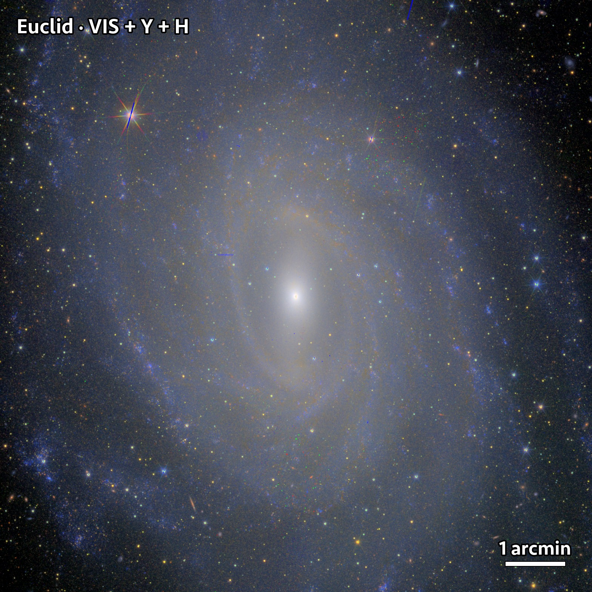
Euclid VIS + Y + H · 0.1″ pixels
SPHEREx · 6.2″ pixels · the six detectors in turn, one brightness scale
Both panels are real data of the same field: the central 10′ × 10′ of NGC 6744 (RA 287.4421, Dec −63.8574), north up, east left, on one scale, so a star in one panel is at the same place in the other. The galaxy is about 20′ across, so this is its inner disk and bulge.
Euclid: the Early Release Observation (ESA/Euclid/Euclid Consortium), VIS + NISP Y + H through the CDS HiPS (CDS/P/Euclid/ERO), as H/Y/VIS in red/green/blue.
SPHEREx: every public QR2 frame covering the nucleus, 310 in all (62, 51, 46, 57, 50, 44 visits in detectors 1-6, 113.6 s each), zodiacal-light model subtracted, sky level removed, resampled north-up onto 6.12″ pixels (native 6.15″), median-stacked per detector.
Two numbers, in this order:
- 6.2 arcseconds: SPHEREx pixels are 62× coarser than Euclid VIS, about 3,800 Euclid pixels in each. That is the cost.
- 102 channels: every one of those pixels carries a spectrum. That is what the cost buys.
All six bands share one surface-brightness scale, so the fading is real: the bulge (median within 30″ of the nucleus) is 3.2, 4.8, 4.9, 2.5, 1.7, 1.2 MJy/sr from 0.75 to 5 µm. Starlight peaks at 1-2.4 µm and is four times fainter by 5 µm. The foreground stars fade more slowly than the galaxy.
The link to this talk: a typical catalogue galaxy (I_E 19-20, half-light radius ~0.75″) is a fraction of one SPHEREx pixel. SPHEREx cannot detect or deblend it; Euclid says where it is, and we measure the SPHEREx spectrum there.
Why the journal-club version was replaced: it set the Euclid press image (the whole galaxy, rotated for display) beside single SPHEREx frames cut to 5′ in detector orientation, with each band stretched to its own range. Different fields and orientations, and a fade that was a change of S/N. Rebuilt by scripts/ngc6744_compare.py; its numbers are in fig/ngc6744_compare.json.
A comparison of SPHEREx and Euclid observations
SPHEREx data is public There is no available source catalogues, we can make one This work has been presented to SGS-OU-PHZ, there is a standard project (pending approval)
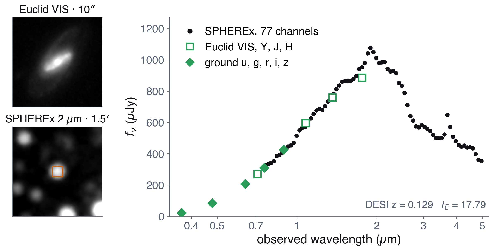
please add one spectra here. from the later 4. except only have the observations. it needs to be pretty much the full page with some text above it, then include euclid vis image and sphere-x image on the left
Added (fig/spherex_euclid_one.png, scripts/spherex_euclid_one.py): the dusty star-forming disc, observations only — 77 SPHEREx channels, Euclid VIS/Y/J/H, ground ugriz — with the VIS stamp and a grey SPHEREx 2 µm stack (30 visits, 1.5′) on the left. Chosen because its stamp shows a clear source (27σ) and its spectrum the PAH line.
Figure: the dusty star-forming disc of the four-galaxies slide (targetid 2650717155641680634, RA 265.072 Dec +64.168, DESI z 0.129, I_E 17.79). Observations only: the 77-channel SPHEREx co-add (size-corrected), Euclid VIS/Y/J/H and ground u g r i z multiplied by the v2 joint-fit zeropoints. Left: VIS 10″ (CDS HiPS) and SPHEREx D3 (~1.7–2.4 µm), median of 30 QR2 visits, ZODI and local sky subtracted, 1.5′ north-up, orange box = the VIS stamp; a brighter star 43″ SSW. The bump at 3.69 µm observed is the 3.3 µm PAH feature (3.27 µm rest in the data), +151 µJy at peak, 36σ on the catalogue errors.
Dates from spherex.caltech.edu/page/data-products and irsa.ipac.caltech.edu/Missions/spherex.html, as read on 9 September 2026 for the journal club; the "now" line is 28 September 2026.
Calibrated spectral images land in IRSA about two months after they are taken, weekly.
- QR1, Jul 2025: first Quick Release images.
- QR2, Oct 2025: reprocessed, much better calibrated, superseded QR1. This is what arrives weekly now, and what our pipeline runs on (1,367,330 frames in the index snapshot of 2026-09-13).
- Nov 2026: the first big one, reprocessed images plus all-sky data cubes, 102 channels.
- Aug 2027 / Jan 2028: high-reliability source catalogue. Dec 2027: year-2 images and cubes. Mar 2028: legacy catalogues.
All products are public through IRSA. Among the higher-level products still to come are an all-sky galaxy redshift catalogue, deep-field mosaics and an interstellar-ice catalogue. Until then, SPHEREx redshifts are something you build yourself, which is the rest of this talk.
Redrawn for this deck by scripts/make_intro_svgs.py.
A bright VIS-selected sample of 13.8 M objects
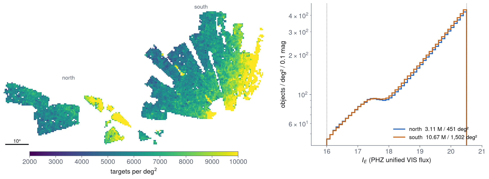
Select sources with Euclid: 16 < IE < 20.5 on PHZ flux_vis_unif ·Peform forced photometry at the position of the Euclid sources within SPHEREx Estimate source redshifts with template fitting (Eazy: https://github.com/gbrammer/eazy-py)
Selection: VIS-detected MER sources, 16 < I_E < 20.5 on the PHZ unified VIS flux (de-reddened, filter-shift corrected). MER Kron magnitude carried alongside as mag_vis_kron.
Download: ESA archive (IDR), five-table join on object_id (MER final catalogue, PHZ photo-z, PHZ classification, PHZ physical parameters, MER morphology), 195 columns, 119 chunks, 13,810,754 rows.
Area: 1,953 deg² by nside-1024 target occupancy (north 451, south 1,502), the areas the histogram divides by. The report quotes ~2,089 deg², measured another way; the two have not been reconciled.
Funnel: only the 1″ positional dedup removes anything meaningful (25,976 tile-boundary repeats) → 13,784,773 (north 3,112,052 / south 10,672,721).
No detection-quality, spurious or sky cut at measurement, on purpose: cuts can be added at release but not removed without re-extracting. Flags are carried as columns.
All wide rows are DR1_R2 (MER 11.3, PHZ 2.16.6/7).
Faint limit 20.5: the depth rule (cumulative σ_NMAD of quality sample ≤ 0.010) is met at the full limit in both lobes, so no depth cut.
The bump at I_E ~ 17.5 is stars: the footprint reaches |b| ~ 17°. South is 3.4× north in objects and 3.3× in area, so per deg² the two lobes agree: south/north = 1.00 at I_E 17.3-17.8 (the star bump) and 1.04 at 19.5-20.5. The south's low-latitude corner is visible in the map but averages out over the lobe.
Figure: make_figures.py (fig_selection), on the v2 catalogue; the target list is the same as in every earlier version.
Four galaxies, four kinds: Euclid and SPHEREx agree
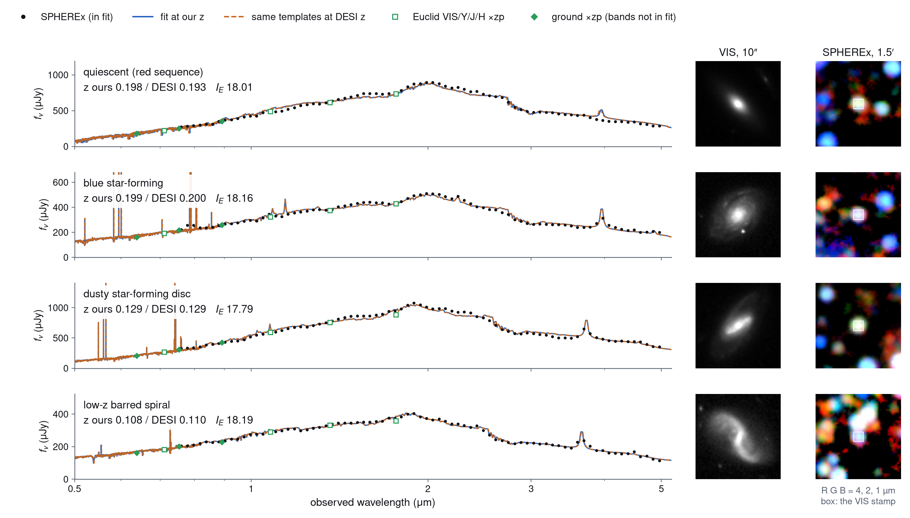
what is the line bump? why does it show up in all of them?
It is the 3.3 µm PAH emission feature (polycyclic aromatic hydrocarbons, warm dust in star-forming regions), seen at 3.3(1+z) ≈ 3.7–4.0 µm. Measured in the SPHEREx points, not the template: 3.27–3.32 µm rest in the three star-forming galaxies (15–36σ peak excess); the quiescent one shows no net bump (0.5σ) — only its fitted template carries a weak one, because the FSPS templates include dust emission. Details in the notes.
The bump at ~3.7–4.0 µm observed: the 3.3 µm PAH feature. Measured on the SPHEREx points against a straight continuum through 3.0–3.4 and 4.1–4.6 µm observed, rest wavelengths from DESI z: dusty disc 3.69 µm obs / 3.27 rest, +151 µJy peak (36σ), 6-channel sum 32σ; blue star-forming 3.97 / 3.31, +75 µJy (28σ), sum 12σ (peak at the window edge, probably underestimated); barred spiral 3.69 / 3.32, +47 µJy (15σ), sum 13σ; quiescent none (0.5σ). σ uses catalogue errors, known to be off by up to ~2× with magnitude; the excesses are 10–25% above continuum regardless.
Barred spiral stamp: the target is detected at its own position (13.6× pixel noise in D1 and D3); the brighter source is a neighbour 14″ N (I_E 17.32, z_est 0.107) and another 25″ NNW (I_E 17.50, z_est 0.109): a small group. Whether v2 forced photometry modelled the neighbours jointly (neighbour_paired mode) or fitted the target alone (extract_spectra.py default) has not been checked; at 14″ (~2 SPHEREx pixels) some neighbour light could reach the target's fit.
SPHEREx stamps (right column): public QR2 L2b frames via IRSA cutouts, IMAGE − ZODI, flag mask as in ngc6744_compare.py, local sky subtracted, NaN-aware resample onto a 2″ north-up grid, median over 23–30 visits per band; R G B = D5 (~4 µm), D3 (~2 µm), D1 (~1 µm), one colour balance, each stamp scaled to its galaxy's centre so field stars saturate. At I_E ≈ 18 these galaxies are ~0.1 MJy/sr per SPHEREx pixel, ~2σ per visit at 1 µm. v2 SPHEREx only. Four north-lobe galaxies from the galaxy sample at I_E 17-18.5 with a DESI redshift and |Δz|/(1+z) < 0.005, chosen inside the Euclid Q1 field so all four have the same VIS and VIS+Y+H stamps (CDS HiPS CDS/P/Euclid/Q1/VIS and /color, 10″; CDS has no DR1 HiPS). 53 of the 13,521 qualifying objects are in Q1.
1. Quiescent, red sequence: targetid 2666309507641850661, RA 266.631 Dec +64.185, I_E 18.01, z 0.198 / DESI 0.193.
2. Blue star-forming: 2653401859641781289, 265.340 +64.178, I_E 18.16, 0.199 / 0.200. Only moderately blue (rest U−V 0.92); a bluer one exists outside Q1.
3. Dusty star-forming disc: 2650717155641680634, 265.072 +64.168, I_E 17.79, 0.129 / 0.129. The 3.3 µm PAH is visible by eye in the spectrum.
4. Low-z barred spiral: 2666045505643127946, 266.605 +64.313, I_E 18.19, 0.108 / 0.110. Its colours said post-starburst; the image says barred spiral.
Type labels are judgement from rest-frame colours, sSFR, spectrum and image, not a spectroscopic classification.
Black: the 77-channel SPHEREx co-add, size-corrected to total flux, which is all the fit sees. Blue: the fitted template at our z; dashed orange: the same templates at DESI's z (here on top of each other). Green: Euclid VIS/Y/J/H and ground bands, multiplied by the v2 joint-fit zeropoints, shown for comparison only. Band/template ratios 0.95-1.03 for all four: Euclid and SPHEREx agree on the flux scale to a few per cent at I_E ~ 18.
Fits reproduced from the catalogue exactly (refit z_est equals the catalogue's to 1e-14; euclid-spherex src/napoli_examples.py, branch v2).
Helium in the upper atmosphere glows at 1.083 µm
The physics
Helium atoms high in the atmosphere sit in a long-lived excited state, and scatter sunlight at exactly 1.083 µm. Hubble's infrared camera sees the same glow.
What it did
Left in the spectrum, the line is read as Hα at z ≈ 0.67: a pile of false redshifts at 0.6–0.68, and a cliff at 0.68.
A galaxy at DESI z = 0.12, fitted as published at z = 0.67;z = 0.11 .
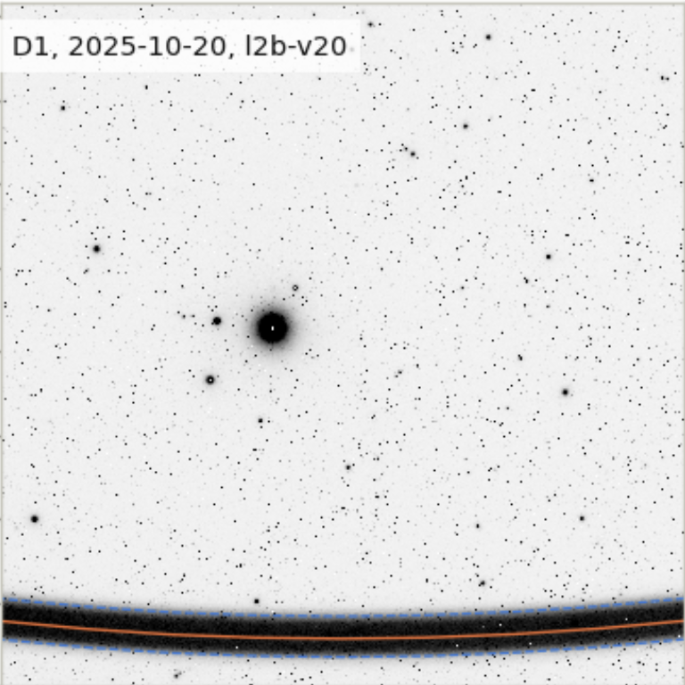
understand this better (just a note for calum)
Metastable 2³S helium in the upper atmosphere resonantly scatters sunlight in the 2³S–2³P transition at 1.083 µm; Hubble's WFC3 sees it as a time-varying background (Brammer et al. 2014).
In one SPHEREx D1 frame (2025-10-20) the sky is 0.40 MJy/sr at 1.040 µm, 2.43 on the line and 0.47 at 1.106 µm. In the co-added spectra a residual on SPHEREx channels 14–15 is read as Hα at z ≈ 0.67, which made the alias pile at 0.6–0.68 and the cliff at 0.68 in the catalogue (issue #11).
The fix so far is a fit-level mask of the He I channels; the next step is SPHEREx's published He I background template (#49), and the adopted tractorjax-spherex background with 288 wavelength bins catches the line's edge across a whole frame (DECISIONS, EXT-20).
Figures: spherex-allsky results/figures/talk/he_image.png and he_spectrum.png (commit 677699d; redrawn from existing results).
Link to this catalogue, not checked: the horizontal band at z_phot ≈ 0.67 on the Euclid redshift-validation slide sits where He I read as Hα lands (1.083 / 0.6563 µm gives z ≈ 0.65), so it is probably the same line. Whether the Euclid fit masks the He I channels has not been checked.
Bright stars pull redshifts into rings around them
How it showed up
Redshift shells that anti-correlate . In linear theory two shells can only correlate positively.
The cause
The halo of a bright star leaks into the local background around each galaxy: z slides below 0.1 near the star, and into 0.5–0.7 in a ring outside it.
The fix
Measure the background as a clipped median over all usable pixels, not a thin annulus. Inside the halo radius, outliers fall from 22.8% to 3.8% .
Galaxies round three bright stars: fitted at z < 0.1 (blue) or 0.5 < z < 0.7 (orange). Left, the annulus background as published; right, the clipped median.
The same sky in SPHEREx D3 (1.6–2.4 µm), median of 127 frames: the halos of the two brightest stars are visible directly.
Found because redshift shells anti-correlated, which linear theory forbids, and because the systematics weights would not converge (CATALOGUE_REPORT.md §8.6, issue #2).
Around three stars of Ks 0.2, 0.4 and 1.9: before, 1,026 galaxies fitted at z < 0.1 and 1,411 at 0.5–0.7; after the F4 background (clipped median over all usable pixels), 886 and 546. Against DESI, inside the halo radius: 22.8% outliers on 3,503 galaxies before, 3.8% on 3,647 after (results/figures/talk/halo_zz.png).
The release also carries the veto radius 0.1° × 10^(0.2(5.5 − Ks)), capped at 3°, round 188,347 2MASS stars (column bs_ratio). In the final background, tractorjax-spherex's map is adopted with F4 kept inside bright-star halo discs (DECISIONS, EXT-20).
Link to this catalogue: the Euclid galaxy sample vetoes 45″ round Gaia G < 13 stars, and the high-z sky movie in the backups shows the same rings round bright stars where that veto is not applied.
The 13.8 M objects: galaxies, stars and failed fits
all objects galaxy sample quality sample stars point-like failed fits removed by flags 13,784,773 5,206,897 (37.8%) 3,102,178 (22.5%) 1,233,310 (8.9%) 985,052 (7.1%) 5,751,542 (41.7%) 607,972 (4.4%)
v2, SPHEREx only. Galaxy and quality samples are resolved (MER point_like_prob ≤ 0.5); quality ⊂ galaxy; the other five add up to all objects. Point-like: would otherwise be galaxies; they are the low-z spike. Failed fits: the fit ran to z = 0, mostly bright stars.
v2 SPHEREx-only catalogue, all 13,784,773 VIS-selected objects (euclid-spherex branch v2, 6b157d1, results/v2_spherex_only/redshift_catalogue/catalogue.parquet; scripts/sample_overview_res.py, candide job 1007278; numbers/sample_overview_res.json).
Samples (decided 15 Oct): galaxy = the release galaxy sample (release_selection.sample_masks: fitted, not is_star, Sérsic/ellipticity, DR1 flags, spurious, Gaia halo veto) AND resolved, i.e. not MER point_like_prob > 0.5 (NaN counts as resolved); quality = that + all ZQ bits + odds ≥ 0.90. This departs from the release definition, which keeps point-like objects so the AGN arm can use them.
Point-like class: 985,052, 15.9% of the release galaxy sample (9.1% of the quality sample). By z_est it removes 82% at 0–0.02, 72% at 0.02–0.04, 53% at 0.04–0.06, 31% at 0.06–0.1, 4–10% at 0.1–0.6, and 38–61% above 0.8. By I_E: under 0.6% brighter than 18, 14–18% at 18.5–20.5. Who they are: 1,169 DESI QSO tracers (median z 1.6), 2,332 DESI STAR spectra, only 12 BGS / 6 LRG / 2 ELG; of truth-matched galaxies at z_spec < 0.04, 750 of 752 are kept. Their photo-z: σ_NMAD 0.34, 55% outliers. Removing them takes galaxy-sample outliers from 2.5% to 1.9% (quality 0.61% → 0.52%), σ_NMAD unchanged.
The low-z excess: N(z < 0.04)/N(0.04–0.08) was 1.39 (galaxy) and 1.42 (quality) before, 0.59 and 0.32 after; z < 0.04 now holds 2.0% of the galaxy sample (was 7.2%). A small rise below 0.06 remains.
Failed fits (5,751,542): z_est ≤ 0, the fit ran to the grid floor; 71% point-like, 67% PHZ stars, peak at I_E ≈ 17.4: mostly bright stars our stellar fit did not claim.
North lobe: galaxy 1,154,944, quality 702,651.
Sample homogeniety
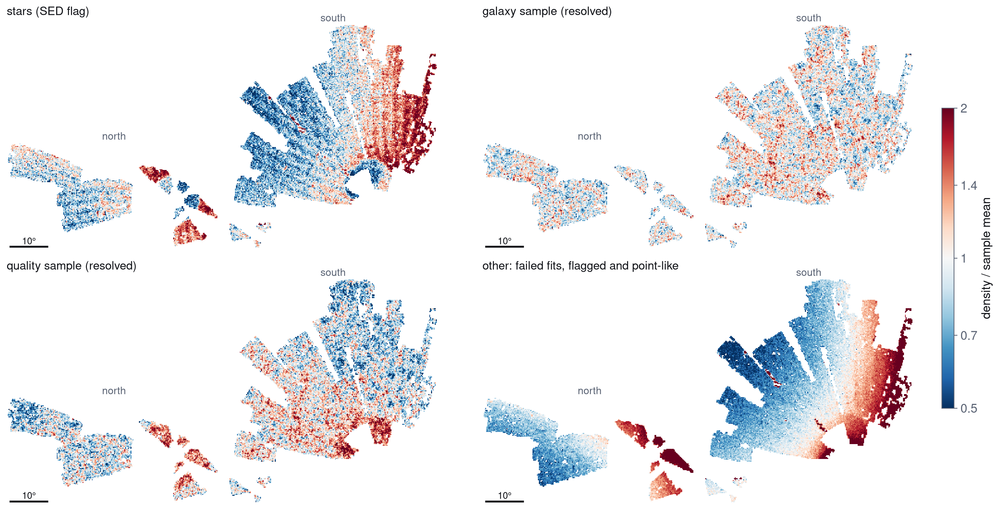
Density relative to each sample's own mean, 0.25° pixels, log colour scale from 0.5 to 2. Both lobes in their own Lambert equal-area projection on one angular scale.
v2 SPHEREx-only catalogue, resolved samples (release galaxy/quality definitions plus not point_like_prob > 0.5; scripts/sample_overview_res.py, candide job 1007278): stars 1,233,310; galaxy 5,206,897; quality 3,102,178; other 7,344,566 (failed fits, flag-removed and point-like).
The ρ values below were measured on the release (unresolved) samples and not redone.
Stars (our SED flag): the Galaxy, a gradient toward low latitude (east of the south lobe, the small northern patches), and stripes along the SPHEREx scan.
Galaxy sample: the latitude gradient is gone; what is left looks like noise plus large-scale structure. Per HEALPix-64 pixel its share of the targets rises with |b| (Spearman ρ = +0.84), which is the other samples falling, not this one rising. Residual: its 0-0.1 shell still correlates with stellar density (systematics slides).
Quality sample: mild excess in the south where the scan lines converge (deeper SPHEREx), and at the southern low-latitude edge.
Other (neither a star nor in the galaxy sample): 5,751,542 failed fits (z at the grid floor) plus 607,972 confident non-stars removed by the Sérsic/ellipticity, DR1-flag, spurious and halo cuts. It follows Galactic latitude (ρ = −0.81 against |b|), not SPHEREx depth (ρ = +0.15 against log n_obs). Of the failed fits 4,111,448 (71%) are point-like in MER morphology and 3,836,841 (67%) are PHZ-flagged stars, median I_E 18.4 and median S/N 19: they are bright stars. None of them carries our is_star: when the galaxy fit lands on the grid floor the star flag is not set. So the stars panel undercounts stars, and "other" is mostly stars, not faint junk. The galaxy sample is unaffected (failed fits are excluded from it).
Density relative to each sample's own mean, 0.25° pixels, log colour scale 0.5-2, both lobes in their own Lambert equal-area projection on one angular scale.
Scrolling through redshift, both lobes
Resolved galaxy sample of the v2 SPHEREx-only catalogue (release definition with the Gaia G < 13 halo veto, plus not MER point_like_prob > 0.5: 5,206,897 galaxies; was 6,191,949 with point-like objects), shells of Δz = 0.03 from 0.02 to 0.35, each galaxy drawn if its probability of lying in the shell (two-sided Gaussian on z16, z_est, z84, widths rescaled by the pull width measured against the truth table per magnitude bin: 0.50 at I_E 16-16.5 rising to 1.08 at 20-20.5; 1.28 before the cut) exceeds 0.7. North and south lobes in their own orthographic projections on one common angular scale. About 30,000 north and 98,000 south galaxies in the 0.20-0.23 shell (29,917 / 97,845; was 29,000 / 96,000: narrower faint-end pulls let more pass the cut). The lowest shell, 0.02-0.05, halves (5,001 / 19,282, was 9,900 / 41,242), and its dense patch at the south lobe's low-latitude edge, the stellar contamination, is gone.
Source: scripts/euclid_sky_movie_v2.py in this deck folder, which imports cambridge-ai-physics/application/figures/euclid_sky_movie.py unchanged; the slim catalogue comes from euclid-spherex docs/slides/euclid_wl_napoli_2026-10-16/slim_for_movies.py with the resolved cut added (candide ~/napoli_scratch/movies_res/slim_res.py, job 1007277). 121 frames, 12 s, loops.
Redshift validation
Truth: DESI DR1 + 6dFGS + 2dFGRS + 2dFLenS + OzDES.
should the number of euclid galaxies with valid photo-z actually be less?
v2 SPHEREx-only, resolved galaxy sample (release galaxy sample + not MER point_like_prob > 0.5; make_figures.py ES_RESOLVED=1, candide job 1007289; numbers/numbers_v2_spherex_only_resolved.json), the report's truth table (2dFLenS included): 111,571 matches. Ours σ_NMAD 0.0087, outliers 1.93%; Euclid PHZ on the same objects 0.0354, 1.50%: 4.1× tighter in scatter, but PHZ now has fewer outliers.
North (101,175): ours 0.0089 / 1.97%, PHZ 0.0341 / 1.46%. South (10,396): ours 0.0071 / 1.46%, PHZ 0.0430 / 1.89%.
What the resolved cut did: it removes 1% of the matches (1,224) but they were mostly DESI QSOs at z 0.9–2.9 that failed in both codes; our outliers 2.50% → 1.93%, PHZ's 2.51% → 1.50%, σ unchanged. With the release definition (point-like kept) the two had the same outlier rate.
Against the September (joint-fit) catalogue, release definition: 0.0111 / 4.8% on 108,968.
Requiring |z_est − PHZ|/(1+PHZ) < 0.15 keeps 96.9% at 0.0085 and 0.29% outliers; 7.5% of our outliers are also PHZ outliers.
The z_phot ~ 0.67 alias band is gone: He I 1.083 µm channels are masked in the v2 fit.
Horizontal striping in PHZ is its own redshift quantisation. Outlier: |Δz|/(1+z) > 0.15.
Redshift validation (linear scales)
The previous slide with linear y-axes: same resolved galaxy and quality samples, same bins and truth table. σ_NMAD 0–0.05 on both rows (top point: PHZ quality sample at z_spec 0.05–0.1, 0.046), with the 0.01 reference line. Outliers 0–7% against z_spec (top: ours, galaxy sample, z 0–0.05, 6.25%) and 0–10.5% against I_E (ours, 20–20.5, 9.9%): the two outlier panels have different ranges. Replotted from the binned values printed by the resolved make_figures run (candide job 1007289; ~/napoli_scratch/resolved/lin.py).
Galaxy auto/cross-correlations
How the weights are made
Eight sky maps: dust, star density, SPHEREx channel count, ecliptic latitude, zodi, background, visits, Euclid VIS depth; five are regressed.
In each shell, galaxy density is binned against each map. A trend counts only if it is 2× larger than in 400 lognormal mocks, which cluster but are clean.
Remove the worst trend with a linear fit, repeat until all pass, and weight each galaxy by 1/fit in its own shell.
What it shows
Neighbouring shells correlate (r = 0.15–0.33, the photo-z overlap); shells two or more apart are near zero.
θ·wij (θ) for all 21 shell pairs, resolved galaxy sample, z = 0.05–0.6. r in the text: ⟨wij ⟩ / √(⟨wii ⟩⟨wjj ⟩) over 10′–60′.
remove the grey bands here please
Removed (fig/wtheta_cross_grid_sq_res_plain.png; scripts/wtheta_cross_square.py --no-scalecut --no-r). The scale cuts are still listed in the notes: 121′, 62′, 39′, 29′, 23′, 19′ from the lowest shell up.
please remove the upper right boxes it makes there too much info on the slide.
Removed; the r values stay in one line of text on the left and in the notes, with the definition moved to the caption.
Measured on the resolved galaxy sample (release galaxy sample + not MER point_like_prob > 0.5) in six shells from 0.05 to 0.6 (universe v2_spherex_only_galaxy_resolved_z005, euclid-spherex branch v2-clustering; w(θ) job 1007282, ISD weights 1007281, mocks 1007279, randoms 1007280; numbers/numbers_v2_galaxy_resolved_clustering.json).
Cross-correlations: Landy-Szalay (D_iD_j − D_iR − RD_j + RR)/RR against one shared random set (11,213,820 randoms, 10× the largest shell; uniform to χ²/pixel 0.95), each galaxy weighted by its own shell's ISD weight, 120 jackknife patches. N per shell on the mask: 232,296; 789,857; 1,087,609; 1,121,382; 715,694; 428,637.
r over 10′-60′, weighted: neighbours 0.05-0.1/0.1-0.2 0.29 ± 0.04; 0.1-0.2/0.2-0.3 0.15 ± 0.04; 0.2-0.3/0.3-0.4 0.27 ± 0.03; 0.3-0.4/0.4-0.5 0.23 ± 0.03; 0.4-0.5/0.5-0.6 0.33 ± 0.03. Two or more apart: −0.03 to 0.08; 0.05-0.1 with 0.5-0.6: 0.00 ± 0.03. Unchanged within errors from the release-sample run.
Reading: a neighbour's cross is the overlap of the two shells' true n(z), so r ≈ 0.15-0.33 says the photo-z leak into the next shell by tens of per cent, as expected for σ_NMAD ≈ 0.009 and Δz = 0.1 shells. Far pairs are small but not all zero: the outlier tails. In September and in the first all-sky run, bright-star halos made far shells anti-correlate; no longer.
What the new first shell changed: 0.05-0.1 replaces 0-0.1 (z < 0.05 is where the point-like contamination sat). Its w(10.8′) is 0.271 ± 0.022 (0-0.1, release sample: 0.057), b_gg 0.76 against 0.70 from the mocks (was 0.28 against 0.44), and its unweighted stellar-density trend S_1D fell from 177 to 7.9. Other shells' w rose by 1-2σ.
The weights (ISD, as in DES Y3/Y6; src/lss/isd.py, citing arXiv:2105.13540 §5.3.1 and 2402.10697 §V.B): eight survey-property maps at nside 256 are built (src/lss/sysmaps.py): E(B−V) (CSFD), Gaia G < 21 star density, SPHEREx mean channel count, |ecliptic latitude|, zodi, annulus background, n_obs, Euclid VIS depth (VMPZ). Five are regressed (template_set fiducial_plus_euclid_depth): E(B−V), stars, channel count, ecliptic latitude, VIS depth. Per shell, galaxy density is measured in 10 equal-area bins of each map; a linear F(s) (intercept 1) is fitted by GLS and its significance is S_1D = Δχ²/Δχ²_68, with the covariance and the 68th percentile from 400 footprint-matched lognormal mocks (pyccl Limber C_ℓ amplitude-matched to the data, FLASK-style lognormal, Poisson sampling) — mocks, not permutations, because a permutation null has no clustering and over-flags cosmic variance. The most significant map is corrected and the loop repeats until every S_1D < 2; each galaxy gets w = 1/F at its pixel, mean 1, clipped to 0.2-5. On 50 clean mocks the same loop flags at least one map in 26-31 of them, so a flag alone is not evidence of contamination.
Resolved run, maps flagged in order and weight range: 0.05-0.1 stars (0.77-1.19); 0.1-0.2 none; 0.2-0.3 channel count, ecl. latitude, VIS depth (0.90-1.23); 0.3-0.4 channel count, stars, VIS depth (0.90-1.22); 0.4-0.5 channel count, stars (0.91-1.36); 0.5-0.6 ecl. latitude, channel count (0.93-1.12). Every final S_1D < 2. The old 0-0.1 shell's weights spanned 0.44-2.59.
Caveat: the 10′-60′ window lies partly below some shells' scale cuts (121′ for 0.05-0.1, then 62′, 39′, 29′, 23′, 19′). The unregressed annulus-background map still trends in 0.2-0.6 (backup).
CMB cross-correlations
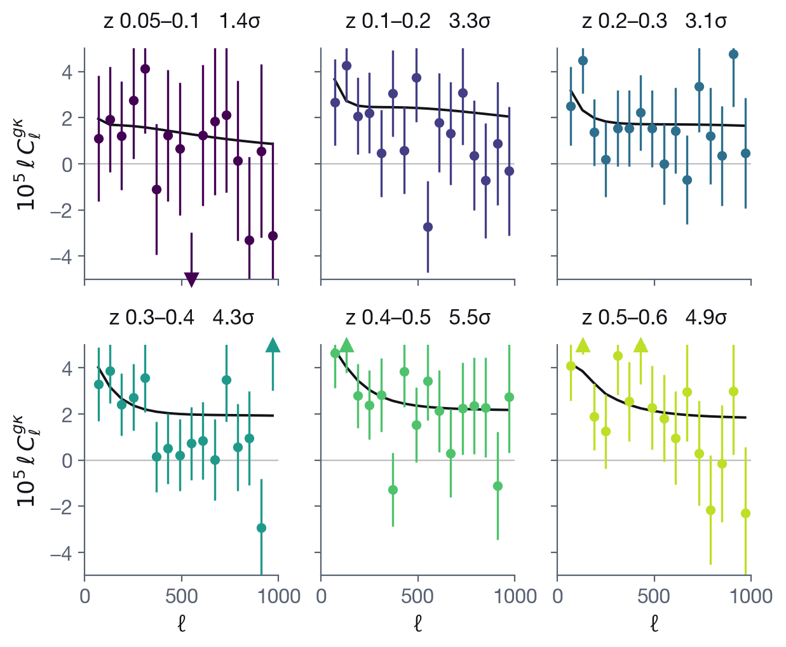
Galaxy × Planck κ: 9.7σ combined, 3–5.5σ in every shell above z = 0.1
Two independent biases agree in every shell, bκ / bgg = 1.0–1.5: lensing knows nothing about our photometry
The 0.05–0.1 shell now passes too (1.2 ± 0.8); its lensing signal alone is weak, 1.4σ
ℓCℓ gκ to ℓ = 1000, black: the pipeline's model curve. Planck PR3 lensing, resolved galaxy sample, ISD-weighted. Pseudo-Cℓ with NaMaster (Alonso, Sanchez & Slosar 2019, MNRAS).
Figure: y fixed to −5…5 (10⁵ ℓC_ℓ); five bandpowers beyond it are arrowheads at the edge: −6.04 (0.05–0.1, ℓ 549), 5.26 (0.3–0.4, ℓ 969), 5.16 (0.4–0.5, ℓ 129), 5.97 and 5.00 (0.5–0.6, ℓ 129, 429).
NaMaster: D. Alonso, J. Sanchez, A. Slosar (LSST DESC), "A unified pseudo-C_ℓ framework", MNRAS, doi:10.1093/mnras/stz093, arXiv:1809.09603; pymaster also asks for a citation of its GitHub repository.
Galaxy × Planck CMB lensing for the resolved galaxy sample, six shells 0.05-0.6, ISD-weighted (euclid-spherex src/lss/xcorr.py, universe v2_spherex_only_galaxy_resolved_z005, job 1007283). NaMaster pseudo-Cℓ at nside 512, Planck PR3 minimum-variance lensing; figure scripts/kappa_row_lcl.py --grid from numbers/kappa_cl_v2_res.json. Detection 1.4, 3.3, 3.1, 4.3, 5.5, 4.9σ; 9.7σ combined as a quadrature sum (treats the shells as independent, so somewhat optimistic). Release-sample run, 0-0.1 first shell: 3.9, 3.5, 3.1, 4.3, 5.5, 4.8σ, 10.4σ.
The test: b_κ comes from how strongly the galaxies correlate with the CMB lensing map, which depends on where the galaxies really are and not at all on our photometry; b_gg comes from the shell's own w(θ), which assumes the redshifts we assigned. Interlopers or a shifted n(z) would make them disagree. b_κ / b_gg = 1.17, 1.46, 0.98, 1.16, 1.29, 1.08 from 0.05 to 0.6 (b_gg 0.76, 0.97, 1.13, 1.21, 1.36, 1.54, errors ~1.5%; b_κ errors 0.32-0.63): consistent everywhere.
The first shell: with point-like objects in and z down to 0, 0-0.1 had b_gg 0.28 and b_κ 1.27 ± 0.32, ratio 4.5: diluted by unclustered objects. Resolved and from 0.05: b_gg 0.76 (mocks expect 0.70), b_κ 0.89 ± 0.63, ratio 1.2 ± 0.8. Its κ signal dropped to 1.4σ: most of what was lensing-correlated in the old shell came from galaxies the new one excludes (z < 0.05 or point-like), and 232k galaxies lens weakly at z ≈ 0.07.
Compton-y (backup slide): detected in every shell.
From two Euclid patches to entire extragalactic sky
it should stop at 0.37 then go back down and back up etc. for a while since I will be talking at the same time
Now stops at 0.34 < z < 0.37, then sweeps back down to 0.07 and up again, repeating until you leave the slide: finale_sky_z037.mp4 is the intro (24 s) followed by one down-and-up sweep (24 s); at its end the video seeks back to the start of the sweep (onended sets currentTime, no attribute changes), so the sweep repeats seamlessly and re-entering the slide starts from the intro.
About 24 s to the last shell (0.34 < z < 0.37), then it sweeps back down to 0.07 and up again, 24 s per sweep, repeating until you leave the slide (talk over it). One file, finale_sky_z037.mp4: the intro, then from 24.37 s one sweep; the video's onended seeks back to 24.37 s. No Galactic-latitude cut. The backup slide after the high-z Euclid movie has an older version stopping at 0.35, made from the |b|-cut sample.
1. The two Euclid DR1 lobes as in the redshift movie earlier, one shell, 0.07 < z < 0.10 (58,643 galaxies, v2 SPHEREx-only galaxy sample, resolved sources only: point_like_prob > 0.5 removed, 5.21 M of 6.19 M galaxies kept).
2. Every galaxy glides from its place in that layout to its place on the whole sky: an equatorial Mollweide, RA 105° at the centre, RA increasing to the left. The north lobe (RA 207°, Dec +76°) ends as slivers near the pole; the south lobe (RA 61°, Dec −46°) lands in the DES part of the southern sky.
3. The all-sky SPHEREx catalogue fades in around them, same shell (1,096,235 galaxies): SPHEREx forced photometry at DESI Legacy Imaging Surveys positions, DR9-north + DR10-south (final_v2, prelim_v0) and, over the sky where those have no grz, the DR11 rerun (campaign final_v2_dr11d, 182 cells, finished 2026-10-14), which replaces DELVE there. Same method as this talk, different parent catalogue, redshifts from SPHEREx alone.
4. Euclid turns back to black and a thin orange line takes over marking its footprint (where Euclid has galaxies at any redshift, bright-star holes filled). 8.3% of the all-sky galaxies fall inside the line; they fade out as Euclid's turn black, so inside the line you see Euclid, once.
5. The shell steps outward to 0.34 < z < 0.37 over the whole sky (790,370 all-sky and 76,552 Euclid galaxies in that last shell), then back down to 0.07 and up again. Stopping below 0.4 stays clear of final_v2's 0.5-0.7 shells, which its report says not to use (He I residual on channel 13, issue #97).
Sample: 41,294,489 quality galaxies (fitted, not a star, five quality bits), no |b| cut and no E(B-V) cut. Legacy N/S and SGA: 34.6 M (star flag v3); they have no quality galaxies at |b| < 10 to begin with, so the absence of a cut adds none of theirs. DR11: 6.57 M (release cut B; star flag from the fit itself, the DR11 star-galaxy classifier is still to come), 4.3 M of them at |b| < 20. Those are the extra sky towards the plane compared with the |b|-cut version, and the place where stars and reddened objects are most likely to have got in. DELVE is dropped wherever DR11 was extracted (3.43 M of its 3.54 M quality galaxies); 0.11 M stay, in the cells the DR11 run skipped and around the LMC.
Both catalogues select a shell as their own movies do: the probability of lying in it (two-sided Gaussian on z16, z_est, z84, widths rescaled by the pull width) above 0.7. Pull width against DESI, by r, for final_v2: 1.00-1.14, so final_v2's errors are close to right (they were 0.5-1.6 in September); DR11 rows use the same widths, they have no DESI of their own. Euclid (resolved sample): pull width against the truth table, 0.50 at I_E 16 to 1.08 at 20.5.
Small artefact: a thin dark rim round the LMC hole (south, below the Euclid south lobe), probably LMC stars just outside the cut.
Made by scripts/finale_movie.py (Z_END=0.37; the loop by scripts/finale_loop.py from the same frames) from scripts/allsky_slim_dr11d.py's file built with BMIN_ALL=0, run on nibi (job 24026552; /scratch/cmurray/spherex-allsky/napoli_allsky/galaxies_final_v2_dr11d_b0.parquet); the selection is imported from cambridge-ai-physics/application/figures (sky_movie.py, euclid_sky_movie.py).
The same method over the whole sky: 92.0 M objects
all objects galaxy sample quality sample stars failed fits removed by cuts calibration stars 92,036,397 71,137,758 (77.3%) 41,294,489 (44.9%) 3,916,929 (4.3%) 11,872,782 (12.9%) 2,942,193 (3.2%) 2,166,735 (2.4%)
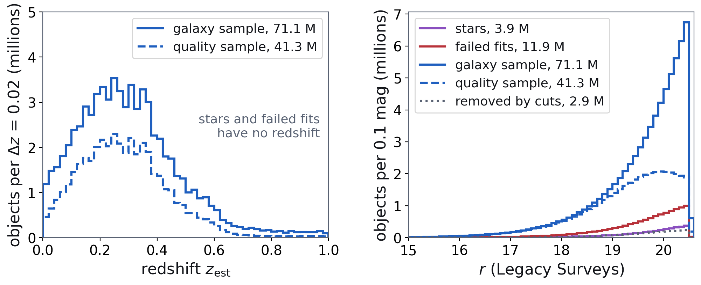
Legacy Surveys DR9-N + DR10-S, DR11 (in place of DELVE wherever it reaches) and SGA, with redshifts from SPHEREx alone; no |b| cut. Quality ⊂ galaxy; the other five add up to all objects. Preliminary: no zero points yet, DR11 not yet checked against spec-z.
All-sky catalogue, every object before any cut, with no |b| cut: the objects of the finale movie's file. final_v2 (release prelim_v0, 77,070,050 rows) with the 13,329,653 DELVE rows dropped wherever DR11 was extracted (DR11 replaces DELVE there), plus every DR11D row (campaign final_v2_dr11d, 28,296,000 with the SGA extension). Total 92,036,397; the old title's 105 M was 77.07 M + 28.30 M, which counts the DELVE/DR11 overlap twice.
Classes (scripts/allsky_overview.py, nibi job 24032952, numbers/allsky_overview.json): failed = not zq_fit or z_est ≤ 0; star = fitted and star-flagged (stargal v3 star_science for Legacy and DELVE, the fit's is_star for SGA and DR11, whose classifier v4 is still to come); galaxy = fitted, not a star, in the parent sample (DR11: release cut B and a finite r); removed = fitted, not a star, outside it (2.94 M, almost all DR11 cut B); Gaia calibration stars are fitted but never galaxies. Quality = galaxy + zq_snr, zq_odds, zq_risk, zq_szn; it is exactly the 41,294,489-row file the finale movie draws.
By survey (galaxy / quality / failed): Legacy DR9 north 11,972,853 / 7,570,210 / 466,791 of 12,778,218; Legacy DR10 south 45,042,985 / 26,635,516 / 1,680,502 of 47,800,690; DELVE DR3 188,339 / 106,572 / 213,679 of 544,697; SGA 428,745 / 413,957 / 14,546 of 450,057; Legacy DR11 13,457,830 / 6,522,904 / 9,495,084 of 28,246,018; SGA (DR11 extension) 47,006 / 45,330 / 2,180 of 49,982. DR11's failed-fit share (34%) is far above Legacy's (3-4%): it reaches into the Galactic plane, and its fits have no spec-z validation yet. No point-like class: Legacy targets are already resolved (TYPE != PSF).
Previous version of this slide (selection and spec-z validation), kept for questions:
All numbers from the final_v2 catalogue report (spherex-allsky, catalogue prelim_v0, 358 cells, built 2026-10-13 at commit c0644f5; the "final_v2 Catalogue Report" artifact). The report's own status line: preliminary, stream co-adds, no zero points applied, "not for science: no number below may be quoted as a release number". Say so in the room.
Selection (§3.1): Legacy 60,578,908 (resolved, unmasked, grz in its own sweep row, dereddened r < 20.55 DR9-north / 20.5 DR10-south, 0.05″ dedup, DESI PHOTSYS seam); DELVE DR3 BDF r where Legacy grz does not reach 13,874,350; SGA 450,057; plus 2,166,735 Gaia calibration stars, fitted but never galaxies. 77,070,050 in all.
The big difference from the Euclid catalogue: the redshift is SPHEREx only (77 channels at R = 40, eazy-py); no optical band enters the fit.
Fiducial footprint (§2.6, Calum 2026-10-12): Legacy N + S at |b| > 10, DELVE at |b| > 20, E(B-V) < 0.10, no bright-star veto: 22,485 deg² by the randoms, 21,464 after the clustering mask; 31,957,110 QUALITY galaxies.
Validation (§5.2): 9,204,483 truth redshifts from eleven surveys (DESI-dominated), 7,130,481 matched. Quality = fitted, not a star (classifier v3), five quality bits; keeps 79.8% of fitted matches. Bias −0.004. By r: σ_NMAD 0.0048 at 15.5-16.5, 0.0082 at 18.5-19, 0.0118 at 19.5-20, 0.0134 at 20-20.5; outliers 0.06% → 2.4%.
Do not use the 0.5-0.6 and 0.6-0.7 shells (He I residual on channel 13, issue #97).
Compare: Euclid × SPHEREx v2 quality sample 0.0076 / 0.6% on 93,552 truth matches, also SPHEREx only (numbers/numbers_v2_spherex_only.json).
DR11 (added 2026-10-15): the DR11D rerun (docs/DR11D_PLAN.md; campaign final_v2_dr11d, frozen e5fae31, option B: 182 shards, LMC and 81 expensive cells skipped) extracted 28,296,000 DR11 targets at their DR11 positions over the DR11-covered DELVE sky plus 50,750 SGA extension rows; 6,568,234 pass the quality bits and cut B, 2,270,555 of them at |b| > 20 (2,250,006 DR11 + 20,549 SGA extension). DR11 replaces DELVE in its sky (Calum 2026-10-13): 3,429,207 of DELVE's 3,535,779 quality galaxies are dropped. Footprint and count lines on the slide are from scripts/allsky_slim_dr11d.py (no E(B-V) cut, so not the 22,485 deg² fiducial area); the fiducial area with DR11 has not been recomputed. 105 M = 77.07 M final_v2 + 28.30 M DR11 rows fitted. DR11 redshifts have no spec-z validation yet, and the DR11 star flag is the fit's own (classifier v4 is S7).
Summary
A close to final Euclid+SPHEREx catalogue is available for anyone to use (just send me a message) The SPHEREx + DESI legacy imaging surveys sample is also available for anyone to use (just send me a message)
Euclid × SPHEREx resolved galaxies, n(z) from reweighted spec-z, against the DES Y6 3×2pt lens bins (arXiv:2601.14559); each scaled to peak 1.
Figure: scripts/summary_nz_euclid.py (numbers/euclid_nz_desy6.json), the twin of the Cambridge interview figure (cambridge-ai-physics/interview/make_nz.py). Euclid × SPHEREx v2, SPHEREx only, resolved galaxy sample, north lobe (where the truth table is); the same six z_est bins as the UNIONS × SPHEREx version (0, 0.10, 0.16, 0.22, 0.30, 0.40, 0.50). Each bin's n(z) is its matched spec-z distribution, every truth galaxy weighted by catalogue/truth counts in its (I_E 0.5 mag, z_est 0.02) cell, so it describes the catalogue and not only DESI-like objects; plotted with a 3-point smoothing on a 0.01 grid. DES Y6: the MagLim++ lens bins of the Y6 3×2pt, read from Fig. 2 of arXiv:2601.14559; bin 2 (0.40–0.55) dropped before unblinding (its Appendix A). Shapes and widths only: every bin scaled to peak 1.
Per bin: 0.00-0.10: mean z 0.126, 68% half-width 0.069, 54% outside the edges, 80,654 galaxies, 10,288 with spec-z (n_eff 1236); 0.10-0.16: mean z 0.147, 68% half-width 0.029, 30% outside the edges, 103,944 galaxies, 17,298 with spec-z (n_eff 2764); 0.16-0.22: mean z 0.202, 68% half-width 0.025, 25% outside the edges, 147,126 galaxies, 20,522 with spec-z (n_eff 3535); 0.22-0.30: mean z 0.261, 68% half-width 0.032, 20% outside the edges, 197,277 galaxies, 23,025 with spec-z (n_eff 3328); 0.30-0.40: mean z 0.344, 68% half-width 0.044, 25% outside the edges, 266,556 galaxies, 20,111 with spec-z (n_eff 2296); 0.40-0.50: mean z 0.432, 68% half-width 0.044, 22% outside the edges, 168,575 galaxies, 6,969 with spec-z (n_eff 989). DES Y6 68% half-widths: 0.076, 0.092, 0.059, 0.069, 0.059, 0.083. Reading: bins 2-6 are narrower than every DES Y6 lens bin; the lowest bin (z_est < 0.1) is broad and leaks upward, the same low-z interloper problem the clustering and CMB-lensing slides show.
Previous figure on this slide, UNIONS × SPHEREx (fig/cambridge_nz_desy6.svg), kept for questions:
UNIONS × SPHEREx (the Cambridge interview deck, make_nz.py): six bins in z_est, each n(z) the distribution of matched DESI redshifts (DIR) in one SPHEREx field of ~13.5 deg², UNIONS r < 20.5 (spherex results/redshift/unions_r205/calibration_nz_6bin.json). DES Y6: the MagLim++ lens bins as used in the Y6 3×2pt (SOMPZ+WZ), read from Fig. 2 of arXiv:2601.14559; bin 2 (0.40–0.55) was dropped before unblinding (its Appendix A). Shapes and widths only: every bin is scaled to peak 1.
Previous figure on this slide, Euclid v2 against DES Y3 MagLim (fig/des_lens_bins.png), kept for questions:
DES Y3 MagLim: the nz_lens extension of the public 2pt file (desdr-server.ncsa.illinois.edu/despublic/y3a2_files/datavectors/2pt_NG_final_2ptunblind_02_26_21_wnz_maglim_covupdate.fits). Bin edges 0.20/0.40/0.55/0.70 are from Porredon et al. (2021); the file's headers do not carry them. The bin means in the file (0.301, 0.457, 0.621) are consistent with them.
Ours: v2 SPHEREx only, north lobe (where the truth is), galaxies with z_est in the bin; their true n(z) is the matched spec-z weighted by catalogue/truth counts in (I_E, z_est) cells, so it describes the catalogue, not only the DESI-like objects. Solid quality sample, dashed galaxy sample.
Per bin, quality sample (galaxy sample in brackets), against DES: mean 0.302 (0.301) vs 0.301; 0.467 (0.453) vs 0.457; 0.592 (0.555) vs 0.621. Width σ 0.062 (0.075) vs 0.084; 0.061 (0.095) vs 0.085; 0.105 (0.151) vs 0.089. Fraction outside the edges 6.6% (14.6%) vs 23%; 13.6% (25.5%) vs 31%; 15.7% (29%) vs 27%.
Reading: in bins 1-2 our quality-sample bins are about a quarter narrower than DES MagLim's and leak half as much; bin 3 (0.55-0.70) is at the edge of what SPHEREx does and is no better. Catalogue counts in the bins (north): quality 343k, 142k, 54k; effective truth numbers after reweighting 3,527, 788, 679.
Not a like-for-like sample comparison: MagLim is i-band magnitude limited to much fainter than our I_E < 20.5; this compares how well each sample's photo-z bin is localised in true redshift.
Backup slides
Everything from here on is for questions.
The near-infrared has to be observed from space
Redrawn for this deck from the CosmoStat journal-club figure (scripts/make_intro_svgs.py imports journal_clubs/spherex/scripts/make_em_spectrum.py and swaps the palette). Facility ranges are real; the depth of the opacity curve is schematic, the windows are in the right places. Euclid is picked out beside SPHEREx for this room.
Read left to right, then land on the orange column.
- From the ground there are two windows, optical and radio; everything else is absorbed.
- Between 1 and 5 µm the atmosphere is chopped into narrow windows (J, H, K, L, M) by water vapour and CO2, and beyond ~2.5 µm the sky and the telescope glow. Ground-based near-IR spectroscopy works, but slowly, and never over the whole sky.
- So the near-IR belongs to space: JWST, Euclid, Roman, Spitzer, WISE. All but WISE are pointed instruments with small fields.
- SPHEREx is not new because of its band. It is new because it takes a spectrum of every point on the sky: WISE did the sky in 4 broad bands, SPHEREx does it in 102 channels.
- Euclid and SPHEREx overlap from 0.75 to 2 µm (VIS, Y, J, H), and SPHEREx carries on to 5 µm.
Assessing the quality of the quoted errors on redshift
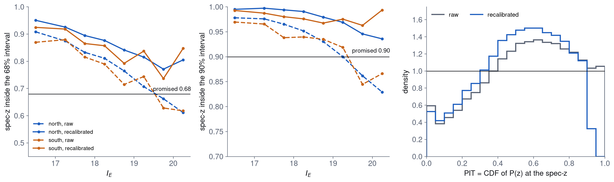
lobe n 68% raw 68% recal. 90% raw 90% recal. north 50,257 0.745 0.835 0.915 0.973 south 5,264 0.797 0.864 0.939 0.980 promised 0.68 0.68 0.90 0.90
Raw intervals are too wide when bright, too narrow fainter than IE ≈ 19.5
The recalibration fitted on the pilot widens them further: drop it
PIT hump = too wide; pile at 1 = spec-z above our P(z) (z biased low by 0.0025)
Held-out half of the truth (the half the recalibration was not fitted on), resolved galaxy sample, v2 SPHEREx only.
Now restricted to the resolved galaxy sample (make_figures.py ES_RESOLVED=1, candide job 1007289). Held-out coverage, N; 68% raw / recal.; 90% raw / recal. North: all held-out 53,453; 0.738 / 0.826; 0.906 / 0.968. Galaxy (release) 50,798; 0.740 / 0.829; 0.909 / 0.969. Galaxy (resolved, the figure and table) 50,257; 0.745 / 0.835; 0.915 / 0.973. Quality (resolved) 41,681; 0.770 / 0.858; 0.933 / 0.986. South: all 5,907; 0.775 / 0.840; 0.913 / 0.961. Galaxy (release) 5,319; 0.791 / 0.857; 0.931 / 0.974. Galaxy (resolved) 5,264; 0.797 / 0.864; 0.939 / 0.980. Quality (resolved) 4,865; 0.811 / 0.878; 0.948 / 0.987. Most of the change from the old slide comes from restricting to the galaxy sample at all.
The numbers below were measured on all held-out objects (the old figure) and not redone: v2 SPHEREx only, the held-out half of the truth (59,360 objects; the other 59,917 fitted the recalibration, stretch_mixture_nfilt_mag). PIT values are calibrate_pz's own (results/v2_spherex_only/pz_calibration/recalibrated.parquet); figure and table from make_figures.py (fig_coverage_pit).
68% raw: 0.738 north, 0.775 south, against 0.68 promised. By magnitude the raw 68% coverage runs from 0.88 at I_E 16-17 down through 0.68 at about 19.5 to 0.55 at 20-20.5: too wide when bright, too narrow when faint. The same in the pull widths measured for the sky movies: 0.49 at I_E 16 rising to 1.28 at 20.5. The fit's error model (sys_err_v1) is magnitude-blind; the magnitude dependence of the misfit is what a refit of the error model should take out.
90% raw: 0.906 north, 0.913 south: right on average, for the same compensating reason.
Recalibrated: 0.826 / 0.968 north. The stretch-and-mixture was designed on the pilot, where raw coverage was 0.64; here it widens intervals that were already wide, so prefer the raw widths. The recalibrated PIT also has a hole above 0.9 that the raw one does not; not understood.
PIT shape: a hump (P(z) too wide in the bulk) and an excess at PIT > 0.95 (spec-z above our upper tail more often than below the lower one): the low-z bias, −0.0025 in z_est − z_spec north, about a third of σ_NMAD.
Use P(z) for stacking and n(z) only with a calibration, not as a per-object probability.
SPHEREx depth
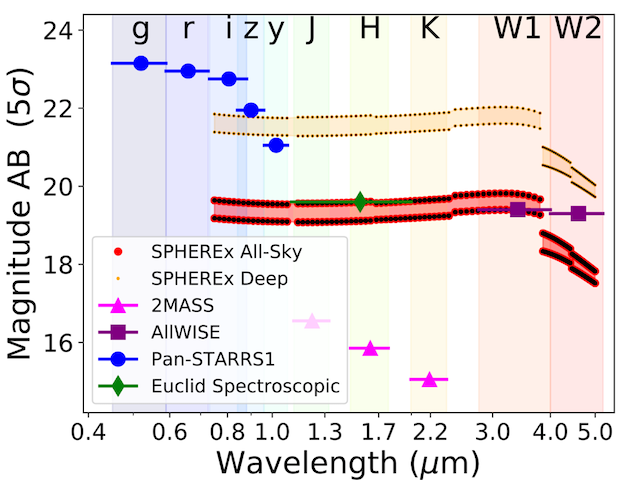
Euclid depth is uniform (tiling at constant exposure), varying weakly with Galactic latitude. SPHEREx revisits the ecliptic poles constantly, so depth is a function of ecliptic latitude: 252 obs at 30°, 325 at 70°, 1,277 beyond 80°. The footprint stops at 87.8° because the poles are Euclid deep fields.
The two are essentially uncorrelated (report Fig. 6), so they act as independent axes of the selection function.
Median co-added S/N over all targets in the v2 catalogue 11.0 (16-84%: 4.7-34.8); median 333 observations per target. Median E(B-V) 0.022 (CSFD, over targets).
This depth gradient comes back in the homogeneity section: it reaches the redshift quality.
Figures: made for this talk from the catalogue (n_obs_bkg and snr columns), both lobes in their own Lambert equal-area projection on one angular scale, 0.5° pixels. The bright spot where the rays converge in the south is the deep sky toward the south ecliptic pole. The dark dots are bright-star holes.
Bottom right, the Euclid VIS 5σ point-source depth (src/depth_maps.py, nside 64, from per-object flux errors; report Figure 4) in the same projection. Its whole colour scale is 23.6 to 24.1, half a magnitude, and the map is nearly flat inside it — that is the contrast the slide is making. The moth-eaten look is the nside-64 pixelisation of a footprint with holes, not missing depth.
Do we need clustering n(z)s?
zphot bin error on ⟨z⟩, direct (ours) effective N DES Y3 clustering-z 0.20–0.40 0.0017 3,527 0.003–0.008 0.40–0.55 0.0081 788 0.55–0.70 0.0175 679
Ours: quality sample, same bins as the summary slide, true n(z) from matched spec-z reweighted to the catalogue, error from a jackknife over sky patches. DES: Cawthon et al. 2022 (MNRAS 513(4)), typical range over its bins.
Below z = 0.4 the direct n(z) is already 2–5× more precise
0.40–0.55: about the same
Above 0.55 the spec-z run out: there a clustering-z would help
Direct side: the n(z) of each z_phot bin from the matched spec-z, weighted by catalogue/truth counts in (I_E, z_est) cells, north lobe (make_figures.py, direct_nz). The error on the mean is a jackknife over HEALPix nside-4 patches (~200 deg² each). It does NOT include the representativeness error: the reweighting assumes the truth sample is fair within each (I_E, z_est) cell, which DESI targeting may violate. So these are lower limits on the direct error, and the honest statement is "comparable or better" in bin 1.
Clustering side: Cawthon et al. 2022 (DES Y3, clustering redshifts against BOSS/eBOSS for MagLim and redMaGiC; arXiv:2012.12826): "Our typical uncertainties on the mean redshift ranged from 0.003 to 0.008, while our uncertainties on the width ranged from 4 to 9%." That is over ~4,000 deg² with BOSS/eBOSS as reference; a clustering-z for this catalogue against DESI over ~450 deg² (north) would have its own error, not forecast here.
Effective numbers fall fast with z: 3,527 in 0.20-0.40, 788 in 0.40-0.55, 679 in 0.55-0.70. Above 0.55 the spec-z overlap is what limits the direct method, and that is where a clustering-z (needing no spec-z of these galaxies) would add something. Method references: spherex-allsky docs/LITERATURE_FAILURE_MODES.md (Gatti et al. 2022; Cawthon et al. 2022).
One run fits two hypotheses
Galaxy fit
77 SPHEREx channels only, He I channels masked
fluxes corrected to total for galaxy size
12 templates, non-negative, z = 0.001–2
→ zest , P(z), χ²gal
Stellar fit
same photometry, same weights
PHOENIX/Sonora grid, no redshift
best single template → χ²★ , Teff , log g
is_star if χ²★ − χ²gal < 0
Stellar templates are not redshifted, so they are a second grid alongside the galaxy fit, not extra galaxy templates: eazy's fit_phoenix_stars fits every PHOENIX/Sonora template to the same fluxes with the same weights, and delta_chi2_star = best stellar χ² − galaxy χ². is_star = delta_chi2_star < 0 (STAR_DCHI2_MAX in src/redshift/estimate_redshift.py). Carried: chi2_star, delta_chi2_star, star_teff, star_logg.
Calibration on Euclid (src/calibrate_star_flag.py): 257,637 Gaia astrometric stars vs 515,519 confirmed galaxies over the pilot; delta_chi2_star median −3,559 for stars vs +377 for galaxies at 18 ≤ I_E < 19; at threshold 0: 0.91 completeness, 0.07 galaxy loss there; Youden optimum +4.2. The scale-free ratio would separate better (AUC 0.93 vs 0.90) but the number needs no change.
It goes blind fainter than I_E 20.5, where the spectra no longer distinguish a star from a galaxy.
The Gaia calibration above was measured on the September (joint-fit) catalogue and has not been repeated on v2. v2 caveat: the flag is only set on objects whose galaxy fit converged; 5.75 M objects whose galaxy fit lands on the grid floor carry no is_star although 71% of them are point-like (homogeneity slide). v2 has no zeropoints in the fit: no optical band enters it.
Testing the different template sets
template bank templates σ NMAD outliers fsps_QSF_12 (adopted)12 0.0128 3.45% UltraVISTA NMF 12 0.0125 4.31% carnall_sfhz (old default) 14 0.0135 3.54% spline 20 0.0136 3.57% PEGASE13 259 0.0144 3.05% Brown+14 atlas 670 0.0153 3.53% PEGASE 127 0.0183 5.38% fsps_QSF_12, single template 12 0.0453 14.5%
Earlier: eazy v1.3 → carnall_sfhz cut σ 17% and outliers 21%
Magnitude prior hurt LRGs → flat
SPHEREx dereddening: negligible at E(B−V) ~ 0.01
Adding ugri: outliers 11.5% → 4.6%
The sweep: eight banks through the identical fitting configuration on the delivered UNIONS combine (12.7k truth objects), same co-adds and error model, so only the bank changed. Adoption gate declared before running: 5% improvement in cleaned scatter with outliers not degrading. Nothing reached it; fsps_QSF_12 retained; bank closed 2026-08-25.
Motivation for the test: two SPHEREx papers argued for alternatives (online dictionary learning beats eazy on mocks; the SPHEREx pipeline fits a large COSMOS2020-derived empirical library). The large empirical atlases came out worse; best-single-template mode (the conventional way to fit an atlas) worse by 3.5×. Interpretation: with a low-resolution spectrum spanning a factor of six in wavelength, a small non-negative basis spans real continua; a large basis adds directions the data cannot distinguish, i.e. variance. The basis is not the bottleneck.
Caveat: the sweep used UNIONS optical bands, not Euclid; re-running it on Euclid is low-priority work.
Earlier UNIONS steps (SPHEREx-only, BGS tile): eazy_v1.3 0.0197 / 17.1% → carnall_sfhz_13 0.0164 / 13.6%; carnall dissolved the "confident alias" pathology. Then on the ngc100 combine, fsps_QSF_12 and uvista_nmf beat carnall (0.0132 vs 0.0139; outliers 2.3% vs 3.3%).
Other UNIONS experiments: emission-line templates matter for BGS; magnitude prior hurts LRGs; extinction A/B on a low-E(B-V) field: 0.01244 → 0.01246, i.e. nothing (kept on for dustier fields); ugri: SPHEREx-only 0.0149 / 11.5% → + ugri + ZP 0.0137 / 4.6%; ugri alone fails. Sample: ELGs (median S/N 0.17) are below SPHEREx's continuum limit; BGS (S/N 6.9) excellent.
The 12 templates: six quiescent, six star-forming
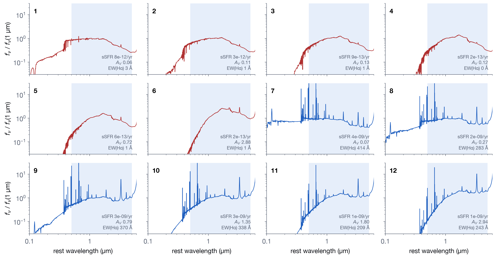
Red: quiescent, getting older left to right (1–4), then dustier (5–6). Blue: star-forming with nebular lines, getting dustier (7–12). Shaded: the rest frame SPHEREx sees at z = 0–0.5.
eazy-py, Brammer (2021), Zenodo 10.5281/zenodo.5012704 · FSPS: Conroy, Gunn & White (2009); Conroy & Gunn (2010) · EAZY method: Brammer, van Dokkum & Coppi (2008)
fsps_QSF_12_v3 is eazy-py's standard FSPS template set (G. Brammer): "QSF" = quiescent + star-forming. My understanding is that it was built by reducing a large FSPS model grid to 12 components, as the original eazy set was; worth checking the eazy-photoz README before saying so in the room. eazy fits a NON-NEGATIVE linear combination of all 12 at each redshift, so the basis spans a continuous space of SEDs, not 12 fixed galaxies. That is why 12 is enough, and why larger banks added variance rather than accuracy in the sweep.
Per template (from the headers eazy reads; sSFR = SFR/mass, M/L_V = mass/L_V, EW(Hα) in Å):
1. quiescent, sSFR 8e-12/yr, A_V 0.06, M/L_V 0.39, EW(Hα) 3: youngest of the quiescent set, post-starburst-like, strong Balmer break.
2. quiescent, sSFR 3e-12, A_V 0.11, M/L_V 0.75.
3. quiescent, sSFR 9e-13, A_V 0.13, M/L_V 1.6.
4. quiescent, sSFR 2e-13, A_V 0.12, M/L_V 3.6: oldest, the classic red-sequence SED.
5. quiescent + some dust, sSFR 6e-13, A_V 0.72, M/L_V 5.9.
6. very dusty old population, sSFR 2e-13, A_V 2.88, M/L_V 40.
7. star-forming, sSFR 4e-9, A_V 0.07, EW(Hα) 414, M/L_V 0.12: young, blue, strongest lines.
8. star-forming, sSFR 2e-9, A_V 0.27, EW(Hα) 283.
9. star-forming, sSFR 3e-9, A_V 0.79, EW(Hα) 370.
10. star-forming, sSFR 3e-9, A_V 1.35, EW(Hα) 338.
11. star-forming, sSFR 1e-9, A_V 1.80, EW(Hα) 209.
12. dusty star-forming, sSFR 1e-9, A_V 2.94, EW(Hα) 243, M/L_V 3.8.
Physical parameters (logmass, logsfr, Av) in the catalogue are the coefficient-weighted sums of these header values; that is how the AGN bank broke masses when its templates had no sidecar.
The rising tail beyond ~4 µm in the star-forming (and dusty) templates is hot dust / PAH emission; the 3.3 µm PAH feature sits inside the SPHEREx range at z < 0.5 but was not measurable per object (AGN arm: AUC 0.43).
Template files: data/fsps_QSF_12_v3/ in this deck folder; figure made by make_figures.py (fig_templates).
The stellar grid: BT-Settl model atmospheres, 400–7,000 K
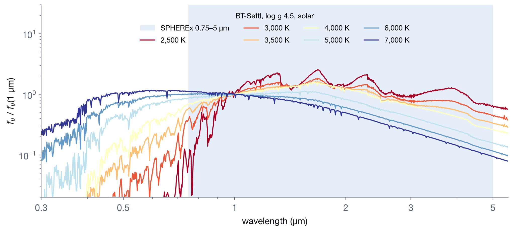
Cool stars rise into the near-IR with H2 O bands a galaxy cannot make; hot stars fall like a galaxy near z = 0
BT-Settl: Allard, Homeier & Freytag (2012, Phil. Trans. R. Soc. A 370, 2765) · Sonora brown dwarfs: Marley et al. (2021, ApJ 920, 85) · grid as packaged by eazy-py (Brammer 2021) · spectra shown via the SVO Theory Service
eazy's fit_phoenix_stars loads bt-settl_t400-7000_g4.5.fits: BT-Settl model atmospheres at log g 4.5 (with 4.0-5.5 available), solar metallicity, 400-7,000 K, and by default adds the Sonora brown-dwarf models (Marley et al. 2018 Zenodo release, published as Marley et al. 2021) and a carbon star. eazy fits each as a single template, scaled, with no redshift.
The curves here are BT-Settl (AGSS2009 solar abundances) from the SVO Theory Service at log g 4.5, 2,500-7,000 K, binned to R = 300. Same model family as eazy's grid; eazy's exact file is not re-downloadable (its S3 URL returns 403), so small differences in abundance version are possible.
Why the flag works where it does: below ~4,000 K the water bands at 1.4, 1.9 and 2.7 µm carve peaks no galaxy template has; at 6,000-7,000 K the spectrum is a smooth Rayleigh-Jeans fall, which a low-z galaxy can mimic, so hot stars are the hard case (Gaia calibration: 0.91 completeness at 18 ≤ I_E < 19).
An example of stars
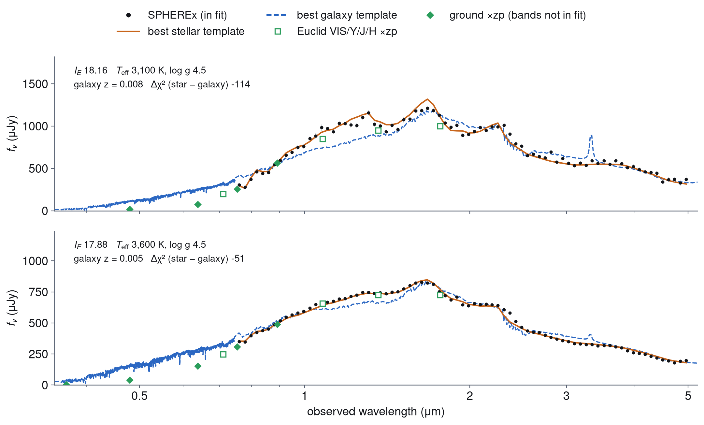
Top: water bands no galaxy template makes · Δχ² = −114
Bottom: the galaxy fit at z = 0.005 comes close, and loses by 51 The Euclid/SPHEREx problem here should be an issue I need to solve
v2 SPHEREx only (euclid-spherex src/example_star_spectra.py --universe v2_spherex_only, refit reproduces the catalogue exactly). The top two of the six on the next-but-two slide: north, is_star set, point_like_prob > 0.9, I_E 17-18.5, median SPHEREx S/N ≥ 10, best χ²/ν per fitted-temperature bin, so a showcase, not a random draw.
Orange: best PHOENIX/Sonora template; blue dashed: best galaxy model, both fitted to the SPHEREx channels only. Green: Euclid and ground bands × the v2 joint zeropoints, for comparison, not in the fit.
The big change from September: with the optical bands in the fit, Δχ² (star − galaxy) was −7,000 to −11,000 for five of six stars; on SPHEREx alone it is −40 to −300. The near-IR shape still separates them (water bands at 1.4, 1.9, 2.7 µm in the cool stars), but the margin is a hundred times thinner, and the galaxy fits now settle at z = 0.004-0.008 rather than at the grid floor. That is the same weakness the homogeneity slide shows: 5.75 M failed galaxy fits that carry no star flag.
The blue bands (u, g, r) sit far below the stellar model in the cool stars: that is the stellar SED, not a calibration problem.
Six random spectra where the redshift agrees
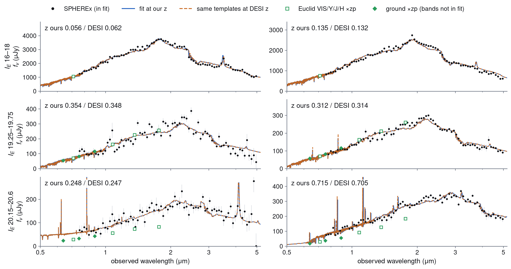
North, two per row: IE 16–18 · 19.25–19.75 · 20.15–20.6. In each panel “z ours / DESI” in each panel.Blue : best template at our z. Dashed orange : the same templates at DESI’s z. Black: SPHEREx, the only data in the fit; green: Euclid + ground bands, for comparison.
v2 SPHEREx only, north, galaxy sample, truth-matched; random draws with a fixed seed (src/napoli_examples.py), not chosen. Agree: |Δz|/(1+z) < 0.02. The refit reproduces the catalogue's z_est exactly for every object drawn.
Bins (failures / objects with a spec-z): I_E 16-18: 36 / 13,922 (0.26%); 19.25-19.75: 840 / 23,083 (3.6%); 20.15-20.6: 265 / 1,323 (20%).
The bright row: the 1.6 µm bump is sharp and both template curves lie on top of each other. The faint row: S/N ~ 3-5 per channel, the bump is still where it should be.
At the faint end the Euclid and ground points sit 30-100% below the SPHEREx spectrum; at I_E ~ 18 they agree to a few per cent (the four-galaxy slide). Not a plotting error: SPHEREx picks up extra light (neighbours inside the 6″ pixels, background) or the faint-end S/N selection noted in V2_RUN. Unverified which.
Six random catastrophic failures
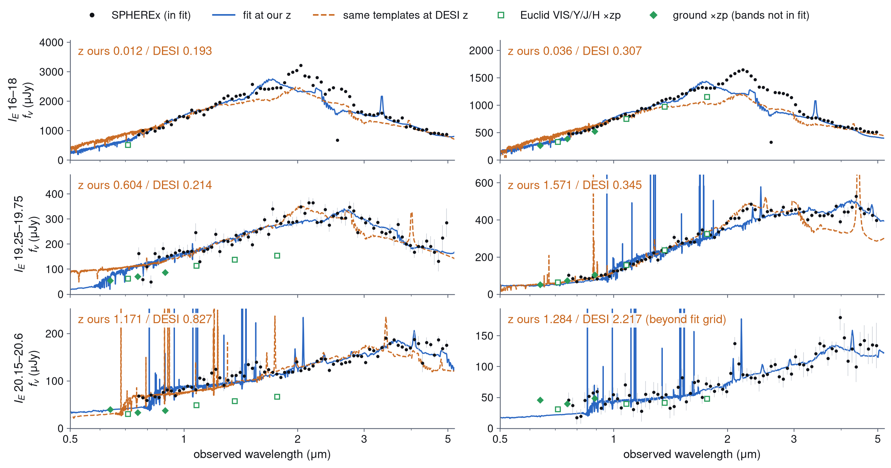
Same bins, same zeropoints, |Δz|/(1+z) > 0.15; “z a / b” is ours / DESI. Blue: template at our z; dashed orange: at DESI’s z, the truth.
Same construction, catastrophic failures only (|Δz|/(1+z) > 0.15), v2 SPHEREx only, random draws with a fixed seed.
Things to point at:
- Bright row (I_E 16-18): both are fitted at z ≈ 0.01-0.04 with DESI at 0.19 and 0.31, and the SPHEREx spectrum bulges above every template between 1.8 and 3 µm. Something adds near-IR light the templates cannot make: a neighbour inside the PSF, an AGN, or residual background. Bright failures are rare (36 of 13,922).
- Middle and bottom rows: bimodal fits resolved the wrong way, a low-z galaxy fitted at z = 0.6-1.6 by placing the bump elsewhere; the faint-end gap between the Euclid points and the SPHEREx spectrum is large here (see the previous slide's note).
- Bottom right: DESI z = 2.217, a quasar beyond the fit's z ≤ 2 grid, so no orange curve can be drawn; our 1.28 is the grid doing its best without AGN templates.
Counts per bin (north): 36 / 13,922 at I_E 16-18; 840 / 23,083 at 19.25-19.75; 265 / 1,323 at 20.15-20.6.
Six flagged stars, 3,100 to 6,000 K
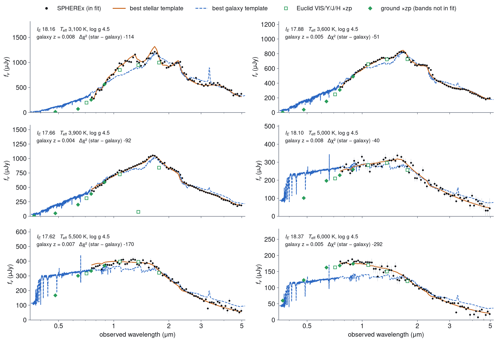
v2 SPHEREx only. Six objects with is_star set and point_like_prob > 0.9 at I_E 17-18.5 in the north, median SPHEREx S/N ≥ 10, one per bin of fitted temperature, best χ²/ν per bin, refit with the star flag on (src/example_star_spectra.py --universe v2_spherex_only; the refit reproduces the catalogue). A showcase of good stellar SEDs, not a random draw.
targetid / T_eff / I_E / Δχ² (star − galaxy): 1546151928671140472 3,100 K 18.16 −114; 2726727104692841362 3,600 K 17.88 −51; 2737914707633559616 3,900 K 17.66 −92; 2235931585789228331 5,000 K 18.10 −40; 2733901638758120336 5,500 K 17.62 −170; 2705878812744314057 6,000 K 18.37 −292.
The S/N floor was added because without it the hottest bin's "best" star had an essentially empty SPHEREx spectrum, which wins on χ²/ν.
The 3,900 K star has one discrepant J-band point (~75 against ~800 µJy); it is in the data.
September (joint fit) gave Δχ² of −7,000 to −11,000 for the same kind of star; on SPHEREx alone the margins are a hundred times thinner. The Gaia calibration of the flag (0.91 completeness at 18 ≤ I_E < 19) was measured on the September catalogue and has not been redone for v2.
Selecting from the sample
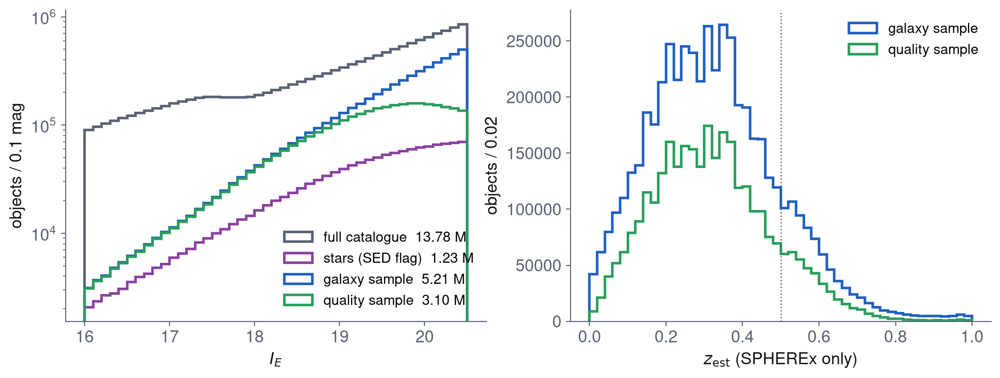
sample definition objects σ NMAD outliers full everything 13,784,773 — — stars our SPHEREx SED star flag 1,233,310 — — galaxy not star, resolved, no instrumental flags 5,206,897 0.0087 1.9% quality galaxy + ZQ bits + odds ≥ 0.90 3,102,178 0.0075 0.5%
v2 SPHEREx only. Samples (decided 15 Oct): the release definition (src/release_selection.sample_masks) plus resolved, not MER point_like_prob > 0.5 (make_figures.py ES_RESOLVED=1, candide job 1007289). Metrics on the report's truth table (2dFLenS included): galaxy 111,571 matches, quality 93,393. The resolved step takes the galaxy ladder from 6,191,949 to 5,206,897 and quality from 3,412,115 to 3,102,178. Densities, resolved: galaxy 2,560 / 2,698 per deg² (N/S), quality 1,558 / 1,598.
Everything below is the release-definition ladder and September comparison, not redone: metrics on 112,795 / 93,552 matches.
Galaxy ladder: all 13,784,773 → confident fit (ZQ fit bit) 8,033,231 → not star (our is_star only; Euclid's PHZ classifier is NOT used) 6,799,921 → Sérsic < 30″ and ellipticity < 0.95 6,743,686 → DR1 detection flags (contaminated, saturated, border, VIS/NIR bright-star masks) 6,478,785 → spurious_prob ≤ 0.5 6,407,852 → ≥ 45″ from a Gaia G < 13 star 6,191,949. Quality: + every ZQ bit and odds ≥ 0.90 → 3,412,115 (2,948,891 at z_est < 0.5).
Against September (joint fit): galaxy 5.65 M at 0.0111 / 4.8%, quality 1.78 M at 0.0081 / 0.6%. The quality sample nearly doubled at a lower scatter.
Fewer confident fits than in September (8.0 M against 9.4 M): the extra failures are mostly stars whose galaxy fit lands on the grid floor, and the star count fell correspondingly (2.83 M → 1.23 M) because is_star is not set on them. Not a loss of galaxies.
Densities (target-occupancy areas, 451 / 1,502 deg²): galaxy 3,011 / 3,218 per deg² (N/S), quality 1,715 / 1,757. 41% of the galaxy sample is at I_E ≥ 20.
The September star-contamination bracket (galaxy sample 7.9-13.9%) has not been redone for v2.
Spectroscopic overlap
catalogue matches what it is ● DESI DR1108,622 N BGS, LRG, ELG, QSO clustering catalogues ● 2dFGRS6,941 bJ < 19.45, SGP strip + 2° random fields ● 6dFGS1,049 K < 12.65, whole southern sky, sparse ● OzDES144 DES supernova fields 2dFLenS (2,536) in the report; server down today
The "splodges" on the coverage map are survey footprints, not our data:
- North, blue: DESI DR1 tiles. DR1 is DESI's first year, and BGS is complete only where enough passes had been observed, which happens in overlapping circular tiles (~3.2° across). Where DR1 has one pass or none, e.g. the eastern half of the main northern patch, there is almost nothing.
- South, orange discs: the 2dFGRS random fields, 2° across, scattered around the South Galactic Pole strip; the large orange patch at the top left is the edge of the SGP strip itself.
- South, green: 6dFGS, a shallow (K < 12.65) all-southern-sky survey, a sprinkling of bright galaxies everywhere.
- Red: one OzDES (DES supernova) field; blue at the top of the south lobe: the narrow strip DESI reaches.
Truth definition as in the report (src/common.py load_truth: DESI DR1 v1.5 LSS clustering catalogues, which already carry ZWARN/ΔΧ² cuts; southern surveys at quality 3-4). 2dFLenS (2,536 southern matches in the report) is missing here because its server did not answer on 2026-09-27.
Density, redshift and magnitude of the spec-z sample
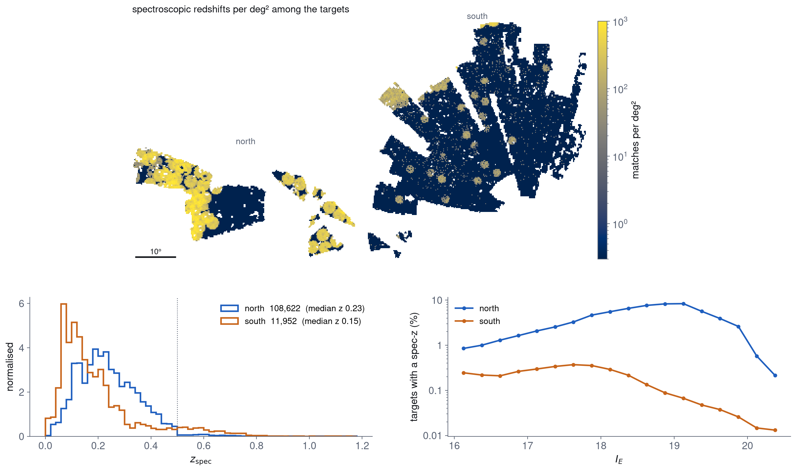
Truth matched at 1″ to every catalogue target, using the report's truth definition (src/common.py load_truth: DESI DR1 v1.5 LSS clustering catalogues for BGS_ANY, LRG, ELG_LOPnotqso, QSO, which already carry the ZWARN/ΔΧ² cuts; plus 6dFGS, 2dFGRS, OzDES DR1/DR2 at quality 3-4). 2dFLenS is missing here (server down on 2026-09-27); in the report it gives 2,536 southern matches.
Redrawn on candide from the report's own truth table, which is target-level and so the same for v2. North: 108,622 matches, all DESI, 3.5% of targets, ~240 per deg² of the 451 deg² occupancy area. The circles are DESI DR1 tiles: DR1 is patchy even in the north.
South: 11,952 (the report's count, 2dFLenS included): 2dFGRS ~6,900, 2dFLenS ~2,500, DESI ~1,600 (only in the narrow strip DESI reaches), 6dFGS ~1,050, OzDES ~150; the per-survey split is the September local fetch, not re-derived. ~7 per deg², a factor ~27 sparser. The bright circles are OzDES/DESI fields, the diffuse spray is 2dFGRS and 6dFGS.
n(z): north median 0.23, south 0.13; 97% / 92% below z = 0.5. The southern truth is brighter and lower-z, which is why the south looks better on paper.
Magnitude: the matched fraction peaks at I_E ~ 19 in the north (8%) and falls to 0.2% at 20.5; in the south it never exceeds 0.4% and is 0.01% at the faint end. The faintest bin holds 27% of the targets and the fewest spec-z: the bin where the redshifts are least certain is the one we can least check.
Consequence: every validation number is really a statement about DESI-like galaxies in the north; the reweighted metrics (quality-sample slide notes) are the honest version for the whole catalogue.
Redshift validation
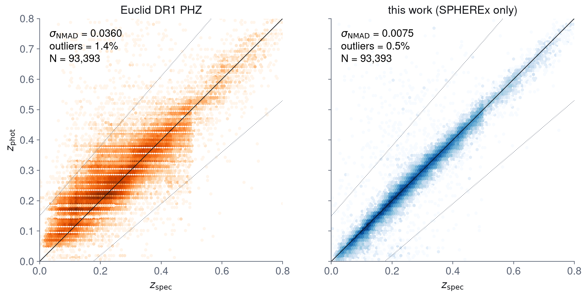
Galaxy sample + all ZQ bits + odds ≥ 0.90. Truth: DESI DR1 + 6dFGS + 2dFGRS + 2dFLenS + OzDES.
v2 SPHEREx only, resolved quality sample (make_figures.py ES_RESOLVED=1, candide job 1007289): 0.0075 with 0.52% outliers on 93,393 matches (north 0.0077 / 0.51% on 83,860; south 0.0066 / 0.61% on 9,533). Euclid PHZ on the same objects 0.0360 / 1.39%. 3,102,178 objects, 1,558 / 1,598 per deg² (N/S).
Honest caveat: truth-matched metrics describe galaxies like the ones DESI targeted. Reweighted to the catalogue's own (I_E, z_est) distribution (north, release definition, not redone): σ 0.0097 with 4.4% outliers (effective N 3,973); for the galaxy sample 0.0160 / 13.0% (4,361). In September these were 0.0151 / 13.6% for the quality sample. The odds cut buys scatter; z_est < 0.5 buys outliers.
North: the spec-z sample stops where the catalogue keeps going
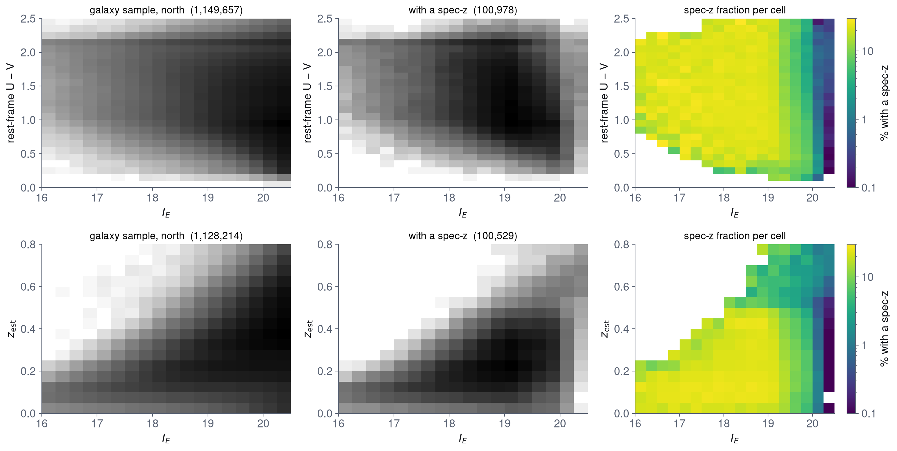
Figure now drawn for the resolved galaxy sample (make_figures.py ES_RESOLVED=1, candide job 1007289); the counts and fractions in these notes are from the release-definition version and were not redone. North, v2 galaxy sample (1.35 M with a rest-frame colour) against the 102,088 of them with a spec-z. Left: the catalogue; middle: the spec-z subset; right: the fraction of each cell with a spec-z (log colour).
Colour (top): the spec-z fraction is 10-20% over almost all of colour space brighter than I_E 19.5, and drops to under 1% at I_E > 20, at every colour. The bluest faint galaxies (U−V < 0.7, I_E > 18) are covered at only ~3-5%: DESI BGS is magnitude-limited in r, and the blue faint galaxies are the ones ELG selection only partly picks up.
Redshift (bottom): coverage is good along the magnitude-redshift ridge DESI BGS follows, and poor at high z_est for a given magnitude, which is exactly where photo-z outliers (true low-z galaxies with a wrong high z_est) live.
Colour caveat: this is the template-based rest-frame U−V (rest_UV) from the SPHEREx-only fit, not an observed colour; the sharp ceiling at U−V ≈ 2.2 is the reddest the 12-template bank makes. For an observed-colour version, use the MER fluxes in results/baseline/target_sample on candide.
Scrolling to z = 0.75: where the redshifts stop working
Same construction as the previous movie (v2 SPHEREx-only resolved galaxy sample, 5,206,897, Gaia halo veto included, probability of lying in the shell > cut, widths rescaled by the pull width measured against the truth table), from z = 0.30 to 0.75, with thicker shells (Δz = 0.04) and a looser cut (P > 0.5), because shells are sparser and the redshift errors larger out here. 165 frames, 16 s.
What changed from the September version: the rings round bright stars are gone (the halo-aware background and the halo veto), and the alias pile-ups at 0.6-0.68 from He I read as Hα are gone (He I channels masked). What is left above ~0.55: the large-scale structure fades into noise as the shells fill with galaxies whose redshifts are no longer good (σ_NMAD 0.0143 at 0.6-0.75; above 0.75 only 181 truth-matched galaxies remain after the resolved cut, at 0.018 and 9.9% outliers). The release-definition version also showed a dense patch at the south lobe's low-latitude corner (stars and blends); not re-checked shell by shell here. About 13,000 north and 45,000 south galaxies in the 0.60-0.64 shell (13,113 / 44,684; was 12,000 / 41,000).
Made by scripts/euclid_sky_movie_v2.py --highz in this deck folder.
The same movie, stopping at z = 0.35
The all-sky finale of the main talk, identical up to 0.32 < z < 0.35, where it stops and holds (about 24 s). Use it instead of the main version if there is no time, or to stay clear of the 0.5-0.6 shell that the final_v2 report quarantines (He I residual, issue #97).
Last shell: 789,466 all-sky and 81,159 Euclid galaxies. Euclid's patch is still visibly denser at these shells: I_E < 20.5 is roughly r < 20.8, so Euclid keeps galaxies the r < 20.5 Legacy selection has lost.
Made by scripts/finale_movie.py (Z_END=0.35); everything else as in the main slide's notes.
SPHEREx all-sky · solved along the way
A dark arc across every frame
One SPHEREx frame, detector 1, 20 October 2025. The orange curve is where the filter passes 1.083 µm.
One curve, one wavelength
SPHEREx has no slit and no grating: a linear variable filter sits on the detector, so each curved row sees one wavelength.
Something fills the sky at 1.083 µm
Whatever the field, the rows that see 1.083 µm are bright: a glow of the whole sky, at one wavelength.
Before saying what it is: this is what we saw. One SPHEREx frame, detector 1, 20 October 2025 (l2b-v20). SPHEREx has a linear variable filter, so wavelength changes across the detector along curves; the orange line is the 1.083 µm curve. The dark arc follows it in every frame, whatever is in the field: something fills the whole sky at that one wavelength. The He I slide in the pipeline section says what.
The zoom is panel (c) of spherex-allsky results/figures/fig_hei_frame.png (report §8.7): the bottom 460 rows, sky pixels only, with the central wavelength at x = 1020 on the right axis.
SPHEREx all-sky · solved along the way
Two galaxies near a bright star, before and after the new extraction
In the core : DESI z = 0.21. Production 0.03, fixed 0.19.
In the ring : DESI z = 0.31. Production 0.58, fixed 0.29.
Red: production. Blue: the fixed background.
Two galaxies near the same bright star. (a) In the core, 0.20 of the halo radius from star A, r = 19.3, DESI z = 0.209: the production spectrum carries the star's light, mostly in the blue and at the He I channels, and fits at z = 0.03; with the fixed background (F4) it is fainter and flatter and fits at 0.19. (b) In the ring, 0.71 of the radius, r = 18.0, DESI z = 0.307: production 0.58, fixed 0.29. Right: the posteriors, DESI marked.
Figure: spherex-allsky results/figures/fig_halo_examples.png (report §8.6).
SPHEREx all-sky · solved along the way
The halos had contaminated the clustering at 0.5–0.7
All galaxies
Bright-star regions vetoed
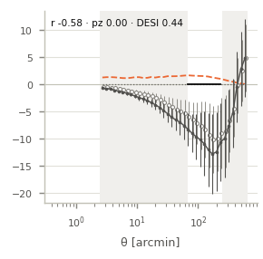
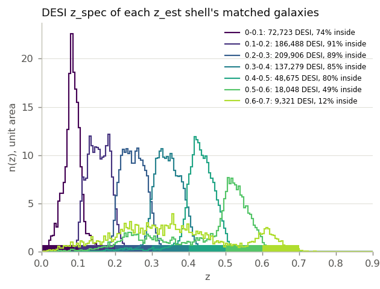
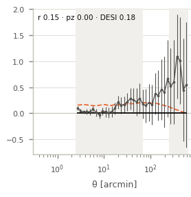
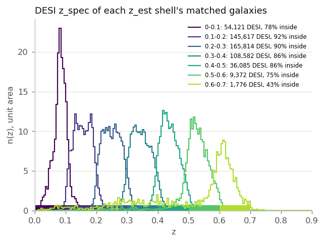
Left: θ·w(θ) between the 0.1–0.2 and 0.6–0.7 shells, r = −0.58 . Right: DESI redshifts of each shell; only 12% of the 0.6–0.7 shell is really there.
The same cross: r = 0.15 , consistent with zero. And 43% of the 0.6–0.7 shell now lies at 0.6–0.7 (0.5–0.6: 49% → 75%).
Two shells 0.4 apart in redshift should not correlate at all, and negative correlation is impossible in linear theory. Galaxies pulled out of the 0.1–0.2 shell into a ring round each bright star leave a hole in one shell where they pile up in the other.
Points: measured. Black line: predicted from the photo-z n(z); orange dashed: from DESI's n(z). Shaded angles are outside the fit.
The 0.1–0.2 × 0.6–0.7 cross-correlation in region 1. With all galaxies (left) it is strongly negative, r = −0.58 over the fitted angles, where the photo-z n(z) predicts 0.00 and DESI's n(z) 0.44 (orange dashed). Negative is impossible in linear theory: it is galaxies moved from one shell to the other round the same stars, a deficit in one where there is an excess in the other. With bright-star regions vetoed (right) it is r = 0.15.
The n(z): DESI redshifts of the galaxies in each z_est shell. Before, only 12% of the 0.6–0.7 shell's 9,321 DESI matches are at 0.6–0.7, and 49% of 0.5–0.6; with the veto, 43% of 1,776 and 75% of 9,372. The linear bias of the 0.6–0.7 shell falls from 5.6 to 2.3 (fig_clus_dz01_bias / _vbright_bias).
This is the veto (bs_ratio), not the F4 extraction fix; the clustering has not been re-run on the F4 extraction.
Figures: crops of spherex-allsky results/figures/fig_clus_dz01_wtheta.png, fig_clus_dz01_nz.png and their _vbright versions (report §9.9–9.10).
SPHEREx all-sky · solved along the way
The comb: redshifts prefer the spacing of SPHEREx's channels
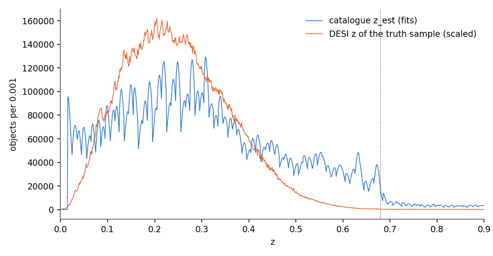
Issue #23. The catalogue's z_est, the peak of P(z), is modulated with a period of 0.0248 in ln(1+z): the SPHEREx channel spacing, not the 0.01 grid beating against histogram bins. Folded amplitude 32% peak to peak, against 2% for DESI. A second 17% modulation is in grid phase, from eazy's parabolic refinement. Stacks show the 3.3 µm PAH feature driving the piles below z = 0.3. It matters for 3D clustering and fine n(z), not for broad shells.
Decision (2 October, Calum): quote both z_est and the posterior median z50. z50 has the same σ_NMAD (0.0094) and outlier rate on QUALITY and cuts the comb about threefold (high-pass rms of n(z) 0.188 → 0.063). Which one the shells are built on is still open. The comb study also fed the 5 October decision to start the redshift grid at 0.001.
Figure: results/figures/zhunt/fig_zhunt_nz_fold.png.
1,825 deg² mask, 5.8 M galaxies, 8 systematics templates
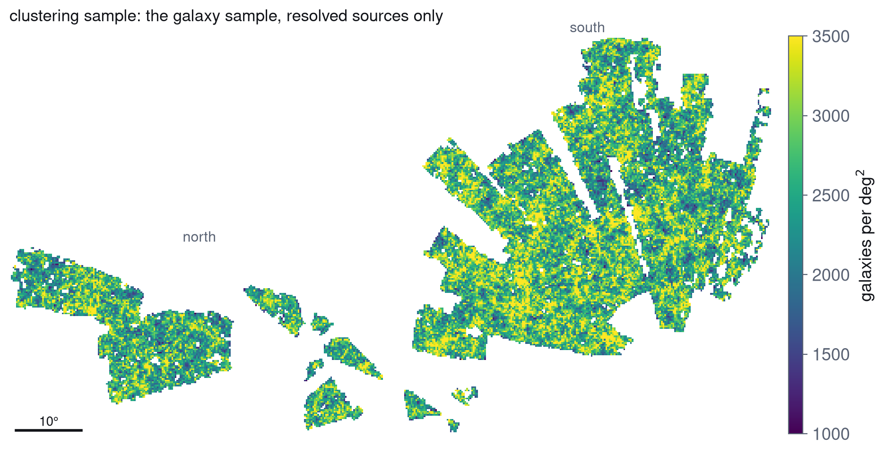
the resolved galaxy sample, v2 SPHEREx only: 4,375,475 on the mask in the six shells 0.05–0.6, 123.8 M randoms · completeness from Euclid VMPZ
templates: E(B−V), stars, filters, ecliptic latitude, VIS depth, zodi, annulus background, nobs
Now the resolved galaxy sample (universe v2_spherex_only_galaxy_resolved_z005; randoms job 1007280, 123.8 M, regenerated because they draw redshifts from the sample). Shell counts on the mask 232,296 / 789,857 / 1,087,609 / 1,121,382 / 715,694 / 428,637. The title's 5.8 M and the numbers below are the release-sample run and were not redone.
Universe v2_spherex_only_galaxy (euclid-spherex branch v2): the v2 SPHEREx-only catalogue, sample = the release galaxy sample (reliability_cut galaxy_sample → release_selection.sample_masks, Gaia halo veto included), shells 0-0.6 in steps of 0.1.
Funnel: 13,784,773 → confident fit 8,033,231 → not a star 6,799,921 → Sérsic/ellipticity 6,743,686 → DR1 flags 6,478,785 → not spurious 6,407,852 → halo veto 6,191,949 → on the analysis mask 5,765,406 → in the six shells 5,230,985.
Mask: nside 1024 → 256, fracdet ≥ 0.8 and VMPZ VIS completeness ≥ 0.8; 34,824 pixels, 1,824.9 deg² (identical to the September mask); SP outlier cut removes 1.77%, leaving 1,792.6 deg². Randoms 123,838,980.
Templates: 8 survey-property maps, 5 fiducial (ebv, stardens, nfilt_mean, ecl_lat, depth_vis) under fiducial_plus_euclid_depth; zodi, bkg_annulus and n_obs built and tested, not regressed.
Mocks: lognormal. ISD converges in all six shells in 2-3 rounds, every final S_1D < 2 (largest 1.80, ecl_lat at z < 0.1). Flagged: stardens + nfilt_mean (0-0.1, 0.5-0.6), stardens (0.1-0.2), nfilt_mean + ecl_lat (0.2-0.3), nfilt_mean + depth_vis (0.3-0.4), nfilt_mean (0.4-0.5). 27-31 of 50 clean mocks flag at least one template, so a flag alone is not evidence.
Map: the galaxy sample's density, 0.25° pixels (make_figures.py fig_clustering_density).
Weights clean the fiducial templates; the ring background still trends
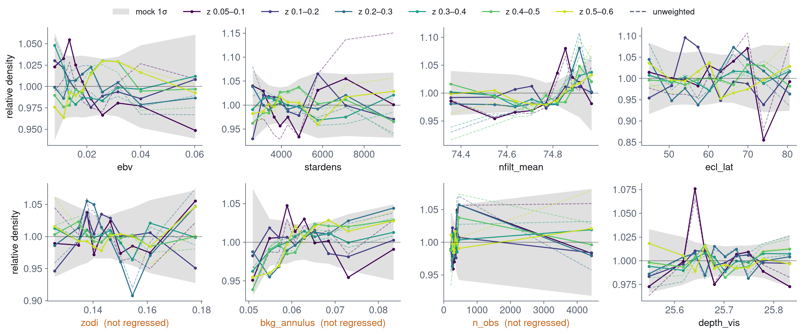
Dashed unweighted, solid weighted, grey band clean mocks
Now the resolved galaxy sample, shells 0.05-0.6 (null battery job 1007286). Weighted S_1D for the unregressed annulus background: 0.04, 0.00, 5.0, 2.1, 9.5, 8.9 from the lowest shell up: still the one map that trends. Weighted worst regressed map per shell: depth_vis 1.65 (0.05-0.1), nfilt_mean 0.40, stardens 1.19, n_obs 0.54, ecl_lat 0.67, zodi 2.78 (not regressed) / stardens 1.68. Unweighted stellar-density S_1D in 0.05-0.1: 7.9 (the release 0-0.1 shell: 177). Numbers below are from the release-sample run.
v2 galaxy sample, six shells 0-0.6 (src/lss/nulls.py, job 1005451; figure src/lss/slides_clustering.py). Dashed: unweighted; solid: ISD-weighted; grey: 1σ of clean mocks. Orange axis labels: templates tested but not regressed.
Fiducial templates after weighting: S_1D ≤ 0.6 everywhere except ecl_lat 2.08 at z < 0.1. Before weighting the worst are stardens 177 and ebv 52 at z < 0.1, stardens 66 at 0.5-0.6, nfilt_mean 57 at 0.4-0.5: the lowest shell is star-contaminated.
Infrared templates (not regressed), weighted: bkg_annulus 9.4 (0.2-0.3), 14.7 (0.4-0.5), 6.8 (0.5-0.6); n_obs 6.7 (0-0.1), 2.8 (0.5-0.6); zodi ≤ 1.9. Against the September catalogue (bkg_annulus 81, n_obs 39, zodi 18) the per-frame background removed most of it, but bkg_annulus, which in v2 is the ring diagnostic recorded beside the map, still trends. Regressing it (the plus_ir arm) is the next step.
Randoms are flat to ≤ 0.0005 against every template.
The previous slide asked it pixel by pixel; now scale by scale
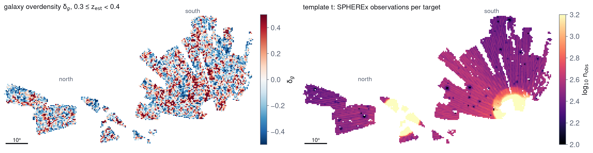
two maps
galaxies δg , template t
split into scales
spherical harmonics, ℓ ≈ 180°/θ
compare at each ℓ
Cgt : shared structure
normalise
rℓ ∈ [−1, 1], 0 if clean
The idea in one sentence: if the galaxy map contains a copy of the template map, the two share structure, and the cross-spectrum C^gt says at which angular scales they share it.
Left: galaxy overdensity of the clustering sample at 0.3 ≤ z_est < 0.4 (0.5° pixels). Right: the template, here the number of SPHEREx observations per target. By eye the galaxy map is mostly cosmic structure plus noise; the question is whether any of the fan-shaped depth pattern on the right leaks into it.
Relation to slide 21: that slide bins pixels by template value and plots the mean galaxy density in each bin (a 1-D relation, all scales mixed together). This asks the same question per angular scale ℓ (ℓ ≈ 180°/θ: ℓ = 20 is ~9°, ℓ = 200 is ~1°). Both use the same galaxies; slide 21 is from the pipeline with ISD weights, these slides are new, local and unweighted.
Why scale matters: contamination that lives on degree scales biases the BAO and large-scale bias; contamination at small scales matters less for us.
Definitions
galaxies: \( \delta_g = \dfrac{n}{\bar n\, f} - 1 \) per pixel (f = covered fraction)
template: t, rescaled to mean 0 and σ = 1
\( C^{XY}_\ell = \frac{1}{f_\mathrm{sky}}\frac{1}{2\ell+1}\sum_m a^X_{\ell m}\, a^{Y*}_{\ell m} \)
\( C^{gg} \): clustering (minus shot noise) · \( C^{tt} \): the template's own structure · \( C^{gt} \): what they share
\( r_\ell = C^{gt}_\ell / \sqrt{C^{gg}_\ell\, C^{tt}_\ell} \)
if \( \delta_g = \delta_\mathrm{true} + \epsilon\, t \): \( r_\ell^2 \) = share of \( C^{gg} \) that is contamination
\( \chi^2 = \sum (r_\ell / \sigma)^2 \), \( \sigma = 1/\sqrt{N_\mathrm{modes}} \)
template what it is, per pixel stellar density SED-flagged stars per deg² E(B−V) CSFD dust reddening SPHEREx zodi zodiacal-light model at the target annulus bkg residual background, 4–6 px annulus nobs SPHEREx exposures per target (log) co-added S/N median S/N of the 77-channel spectrum
Clustering sample (odds ≥ 0.90, not a star) in 6 zest shells · 27′ pixels · 1,808 deg² · ℓ = 10–330 in 7 bins
n: galaxies in the pixel; n̄: mean over the mask; f: fraction of the pixel covered by the footprint (from target occupancy at 3.4′), so edge pixels are not read as underdense. Mask: pixels ≥ 80% covered.
Templates are the per-pixel mean of per-object catalogue columns, then standardised, so C^tt and C^gt are comparable across templates. log n_obs because depth goes as the log of the exposure count.
a_ℓm are the spherical-harmonic coefficients of the map (healpy.anafast); dividing by f_sky is the simplest partial-sky correction (no mode-coupling matrix; NaMaster on candide does this properly).
Shot noise: 1/n̄ (per steradian) is subtracted from C^gg only; the star map has ~300 stars per pixel, so its shot noise is negligible.
Linear contamination model: if the observed field is the true field plus ε times the template, then C^gt = ε C^tt and C^gg picks up ε² C^tt, which is r² of the total. r = 0.3 → 9% of the power.
Error: for no true correlation, r_ℓ scatters with σ = 1/√N_modes, N_modes = f_sky Σ(2ℓ+1) over the bin. Bins are treated as independent (approximately true for these wide bins).
The six templates
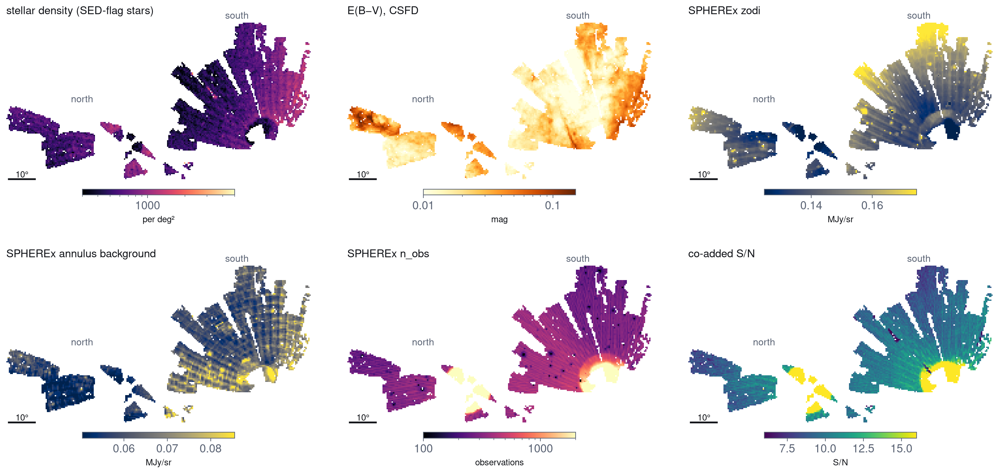
Each is the per-pixel median of the per-object column in the catalogue (stellar density: count of SED-flagged stars per deg²), 0.5° pixels, same projection as the other maps.
Stellar density: rises toward the Galactic plane (east of the south lobe, the small northern patches); the rings are bright-star masks.
E(B−V): low everywhere (median 0.03), highest in the north-west and along the south's eastern edge.
Zodi, n_obs, S/N: all set by the SPHEREx scan. Zodi is brightest near the ecliptic; n_obs and S/N are highest toward the ecliptic poles, where the scan's great circles converge (the fan in the south). These three are nearly the same map, so their detections are not independent evidence.
Annulus background: bright around extended sources and bright stars, and higher at low Galactic latitude.
The three spectra: Cgg , Ctt and Cgt
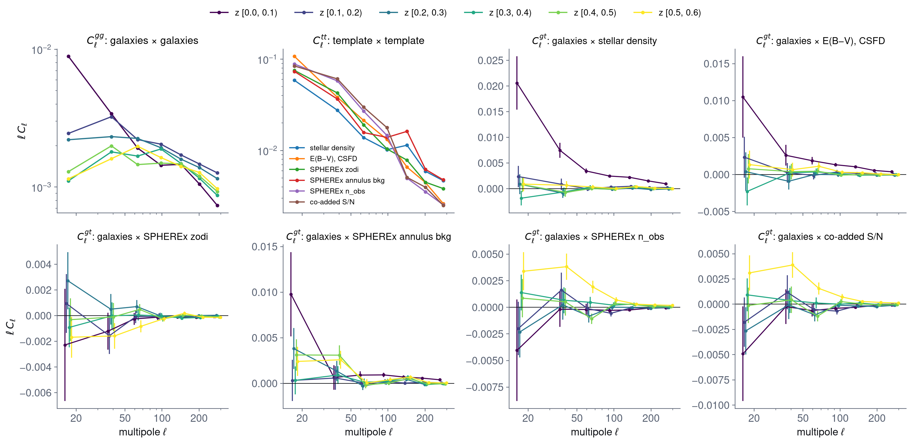
All plotted as ℓ·C_ℓ so each ℓ bin reads evenly.
Top left, C^gg: the galaxy clustering in each shell after shot-noise subtraction. The lowest shell clusters most strongly in projection (nearest, largest angular structures); z 0.5-0.7 is high because it is dominated by interlopers from other redshifts plus residual systematics.
Top second, C^tt: every template has most of its structure on large scales (steeply falling), which is why contamination, if present, shows up at low ℓ.
The other six: C^gt per template with Gaussian errors √((C^gg C^tt + C^gt²)/N_modes). Zero means clean. Stellar density, n_obs and S/N are positive at ℓ < 100; zodi is negative (the mirror image of n_obs); E(B−V) is consistent with zero except the lowest shell; the annulus background is shell-dependent, and the z 0.5-0.7 shell stands out.
Next slide divides C^gt by √(C^gg C^tt) so templates and shells can be compared on one scale.
Normalised: contamination is largest on large scales
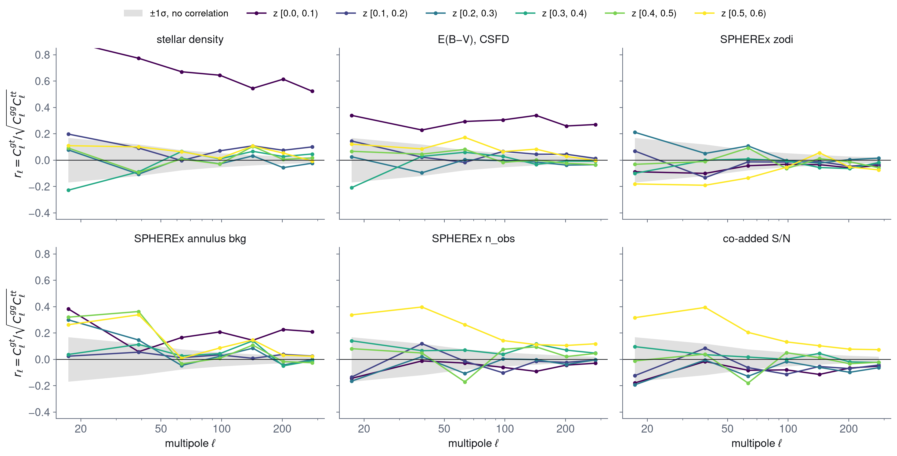
The correlation coefficient r_ℓ = C^gt / √(C^gg C^tt) from the previous slide's spectra, per multipole bin. Grey: ±1σ expected for no correlation.
Stars and SPHEREx depth (n_obs, S/N) peak at ℓ < 50, i.e. degree scales, which is where the BAO and the large-scale clustering live. Hence the need for weights and for the plus_ir universe that regresses zodi, annulus background and n_obs.
The z 0.5-0.7 shell behaves differently throughout (annulus background r ~ 0.5 at ℓ 40-100): it is dominated by photo-z interlopers, as the Planck lensing test also showed.
Galaxy × CMB lensing at 9.7σ; tSZ in every shell
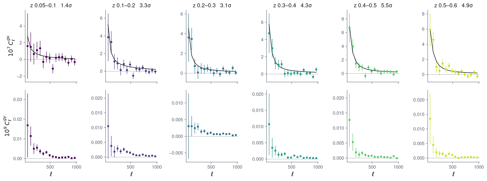
bκ / bgg = 0.98–1.46 from z = 0.05 to 0.6 (resolved galaxy sample)
0.05–0.1: bgg 0.76, bκ 0.89 ± 0.63. With point-like objects and z < 0.05 kept, 0–0.1 had bgg 0.28 against bκ 1.27: diluted
Now the resolved galaxy sample, shells 0.05-0.6 (κ/y jobs 1007283-84). κ detection 1.4, 3.3, 3.1, 4.3, 5.5, 4.9σ, 9.7σ in quadrature. Numbers below are from the release-sample run.
v2 galaxy sample, ISD-weighted (src/lss/xcorr.py; jobs 1005452 κ, 1005453 y, 1005454 vetting). NaMaster pseudo-Cℓ at nside 512. Planck PR3 MV lensing, PR2 MILCA y.
Galaxy × κ: 3.9, 3.5, 3.1, 4.3, 5.5, 4.8σ in the six shells; 10.4σ combined as the quadrature sum, which treats the shells as independent and so is optimistic (neighbouring shells share structure, r ≈ 0.2-0.35 on the cross-correlation slide). September, odds ≥ 0.90 sample: 8.8σ.
b_κ / b_gg: 4.5 at z < 0.1 (b_gg 0.28, b_κ 1.27 ± 0.32; the mocks expected b_gg 0.44), then 1.50, 1.00, 1.18, 1.30, 1.04. The test is the agreement of a bias from an external map with the bias from the sample's own clustering; it passes from 0.1 to 0.6. At z < 0.1 the shell clusters far too weakly for its lensing: diluted by objects with no clustering of their own (stars or failed fits near z ≈ 0, which the stellar-density null test also shows), plus some higher-z galaxies that carry the lensing.
Galaxy × y: detected in every shell, p from 8e-13 to 2.5e-3.
Vetting: randoms × κ/y p = 0.79/0.98, weight map × κ/y p = 0.98/0.28, every fiducial template p ≥ 0.08. Not null: bkg_annulus (p = 1e-4 at z < 0.1, < 1e-4 at 0.5-0.6) and n_obs (< 1e-4 at z < 0.1) against the shells.
Backup · sky background
The photometry pipeline, end to end
ONCE
targets
Legacy + DELVE + SGA
+ calibration stars:
77.1 M positions
sky cells
10° lattice,
358 cells, two
clusters, one ledger
frame index
IRSA QR2 L2B frames
(pinned); keep those
covering a target
staging
S3 → node-local disk,
2,000-frame batches,
deleted once measured
PER FRAME, THEN PER TARGET IN IT
open the frame
IMAGE, VARIANCE, FLAGS,
ZODI, PSF cube,
wavelength map
background map
ZODI + B(λ) + local map,
halo-aware near stars
(next slides)
stamp
33 × 33 px; PSF of its
zone, shifted to the
sub-pixel position
Tractor fit
flux only, position fixed,
sky fixed at 0,
clipped weights
one observation
flux, error, λ, Δλ,
flags, background
subtracted
PER TARGET, ALL OBSERVATIONS
archive
every observation kept
(3.7 × 10¹⁰ rows, 1.7 TB)
so co-adds can be rebuilt
co-add
77 channels, R = 40;
errors × per-detector
factor
zero points
measured on DESI;
not yet applied
(preliminary)
redshift fit
eazy-py, 12 FSPS templ.,
flat prior, He I
channels masked
catalogue
+ stellar fit (is_star)
+ quality bits,
kept raw
EUCLID DR1 × SPHEREX v2 (THIS TALK): SAME STAGES, THESE DIFFERENCES
Targets: Euclid VIS-detected, 16 < IE < 20.5, 13.8 M · cells 4°, no frame cap
Background, weights, co-add: as above (per-frame map, clipped weights, streaming co-add, OUTLIER kept)
Size: each SPHEREx flux divided by k, the share of a Sérsic galaxy's light a PSF fit recovers
Redshift fit: SPHEREx alone, as above · the September catalogue used a ring background and a joint fit
Top three rows: the all-sky final run (final_v2, profile "final"). The grey box: how the Euclid DR1 × SPHEREx v2 catalogue, the one in this talk, differs. v2 runs the all-sky extraction profile on the Euclid targets (euclid-spherex src/run_profiles.py, profile "euclid"), so the only differences left are the targets, the cell lattice and the size correction. Background estimation is the red box; the following slides open it up.
Once: targets in positions_final.fits, 77,070,050 rows (Legacy DR9-north r < 20.55 / DR10-south r < 20.5 with grz, 60.58 M; DELVE DR3 13.87 M; SGA 0.45 M; Gaia calibration stars 2.17 M). Sky cells on a fixed 10° lattice (src/spectra/campaign.py), 358 cells shared between the nibi and fir clusters by a hash-chained ledger. Frame index: one IRSA TAP query on spherex.artifact × spherex.plane, QR2 only, pinned by sha1 (src/spectra/build_frame_index.py); per cell, a frame is kept if any target lies inside its footprint (17 px margin), no frame cap (cell_index.py, extract_frames.py). Staging: from the S3 Open Data mirror (HTTPS fallback to IRSA) onto node-local disk in 2,000-frame batches, the next staging while the current is measured, each deleted once measured (docs/STORAGE.md).
Per frame: each frame is opened once (frame-major), IMAGE, VARIANCE, FLAGS, ZODI, PSF cube and the wavelength WCS read (src/spectra/extract_spectra.py ~785-819); the background map (tjhec) and the variance gain for the clipped weights are made per frame. Per target on that frame: 33 × 33 px stamp; the PSF of the nearest PSF-cube zone, 10× oversampled, spline-shifted to the sub-pixel offset and summed to 9 × 9 px; defect mask (OUTLIER unmasked in the final run); Tractor PointSource with the position frozen and the sky fixed at zero, fitted to IMAGE − map with clip3 weights. Output per observation: flux, error, aperture flux, λ, Δλ from the wavelength WCS, flags, the ring diagnostic and the background subtracted; F4c flux by a direct solve; Msky for SGA galaxies.
Per target: the archive keeps every observation (about 3.7 × 10¹⁰ rows, ~1.74 TB; OPERATOR_BRIEF), so the co-add can be rebuilt without re-extracting. Co-add: 77 channels at R = 40 from 0.75 to 5.0 µm (coadd_stream.py channel_grid), each error inflated by the frozen per-detector factor (1.03-1.28); the stream co-add has no clip; the release co-add rebuilt from the archive adds the l3 gain, rejection and the all-source-frame veto. Zero points measured on DESI (1.08-1.11 over 3.8-5 µm) but not applied in prelim_v0. Redshift: eazy-py, fsps_QSF_12_v3, flat prior, empirical error model, He I channels 14-15 masked, log grid from z = 0.001, P(z) stored; SPHEREx channels only. Stellar fit: eazy's PHOENIX/Sonora grid, is_star when χ²_star − χ²_gal < 0. Quality bits stored raw; samples defined at release.
Euclid (docs/reports/final_2026-09-28 §3): 13,784,773 VIS-detected targets; 212 cells of 4° with a 6,000-frame cap (31 cells hit it, ~21% of targets); the earlier extractor (ring background, OUTLIER masked, 1/VARIANCE weights); a batch co-add onto the same 77 channels with a 3σ clip; zero points fitted at the spec-z on half the truth, iterated, frozen, applied to the Euclid and ground bands with SPHEREx as the anchor; a joint fit of SPHEREx + Euclid VIS/Y/J/H + ground bands.
Backup · photometry
How a flux is measured: the PSF and the Tractor fit
The PSF comes with the frame
Every frame carries its own PSF: 121 zones (11 × 11 across the detector), each 10× oversampled, built by the mission from >1,000 stars per zone. We use the zone nearest the source.
Placed before it is binned
At 6.2″ the pixels undersample the PSF, so where a source sits inside a pixel changes how its light splits between pixels. We shift the 10× PSF to the source's sub-pixel position, then sum it into 9 × 9 native pixels. Binning first and shifting after loses 6–9% of the flux, worst on the sharp blue detectors.
Point source, fixed position
The Euclid (or Legacy) position goes through the frame's WCS. The galaxies are a fraction of a pixel (IE 19–20: ~0.75″), so a point source is the model.
One free parameter: the flux
Background already subtracted, sky fixed at zero, position and PSF frozen. What is left is a weighted linear fit of the PSF P to the 33 × 33 px stamp d :
\[ \hat F = \frac{\sum_i w_i P_i d_i}{\sum_i w_i P_i^2}, \qquad \sigma_F = \Big(\sum_i w_i P_i^2\Big)^{-1/2} \]
Tractor does this solve (a full fit and the closed form agree to float precision). Flagged pixels get w = 0. Weights: 1/variance in the Euclid catalogue; in the all-sky final run a clipped variance, because the shipped variance uses each pixel's own noise and biases every flux low.
Then many times over
One flux and error per target per frame, hundreds per target, each with its own wavelength from where it fell on the filter; co-added onto 77 channels.
Checked against IRSA's own spectrophotometry tool: flux scale 1.036, no trend with wavelength. What the model cannot do: large galaxies lose light outside the PSF, and a neighbour inside the PSF adds its own (no neighbours are fitted).
Code: spherex-allsky src/spectra/extract_spectra.py (psf_zone, native_psf, measure_target, measure_stamp); the Euclid extractor (euclid-spherex src/spectra/extract_spectra.py) has the same psf_zone, native_psf and Tractor call.
PSF: the L2B frame's PSF extension is a cube of 121 zones on an 11 × 11 grid over the detector, each 101 × 101 at 10× oversampling (centre index 50); the mission builds it from more than 1,000 stars per zone and band (SPHEREx pipeline paper, as summarised in spherex-allsky docs/SPHEREX_ONLINE_2026-10-02.md). psf_zone picks the zone whose centre (XCTR_n, YCTR_n) is nearest the source's detector position. The PSF is not interpolated between zones; tractorjax blends neighbouring zones bilinearly, effect unquantified.
Zone off-by-two (issue #63): the zone centres are 1-based; the Euclid extractor and allsky_v1 compared them with sx − 1 instead of sx + 1, which picks the neighbouring zone for ~2% of positions; on 120 real observations one flux changed. Fixed in the all-sky final run (--psf-zone-onebased); not re-run on Euclid.
Sub-pixel placement (native_psf): the oversampled zone PSF is shifted by the source's sub-pixel offset (dx, dy) × 10 with a cubic spline, then 10 × 10 blocks are summed into a 9 × 9 native-pixel stamp, normalised to unit sum. The source is then pinned at the integer pixel so Tractor applies no further shift. The comment in the code: block-reducing first and letting Tractor Lanczos-shift the native stamp "smears and loses ~6-9% of the flux (worst for the sharp blue detectors)". This is the "PSF undersampling fix" settled in the UNIONS predecessor, and it reproduces the official IRSA/Level-3 fluxes. The code refuses any PSF header whose oversampling is not 10 (EXT-24), rather than mis-sample.
Fit: Tractor Image with data = stamp minus background, invvar = weights, PixelizedPSF(native PSF), ConstantSky(0), LinearPhotoCal(1); PointSource at the integer pixel with position frozen, image parameters frozen; tr.optimize_forced_photometry(variance=True). With only the flux free this is linear least squares: F = Σ w P d / Σ w P², error from the inverse variance Σ w P². DECISIONS 2026-10-07 (EXT-67): a direct weighted solve f = Σ(wPd)/Σ(wP²) equals the full Tractor fit to float precision, which is how the second (F4c) flux is computed cheaply. If nothing constrains the fit (every pixel under the PSF masked, e.g. the D3/D4 band edge at 2.40-2.44 µm) the observation is reported as failed rather than given the seed flux.
Weights (issue #47): the L2 VARIANCE's Poisson term is computed from each pixel's own measured signal, so 1/VARIANCE down-weights pixels that fluctuated high and every flux is biased low by a detector-dependent constant (blank sky −1 to −2 µJy on D1-D4, −9 on D5, −17 on D6), the same on every visit, so co-adding does not remove it. The all-sky final run uses "clip3": VARIANCE − g·clip(d, ±3σ), which removes the pixel's own signal and noise for faint sources and leaves bright ones essentially unchanged. The Euclid catalogue uses plain 1/VARIANCE.
Also recorded per observation: an aperture flux inside r = 3 px (a diagnostic of how much light a point-source model misses on extended galaxies), the wavelength and bandwidth at the source pixel from the frame's wavelength WCS, flags, and fit-quality statistics.
Validation against IRSA (Euclid report, pilot): after the PSF correction the two agree to an inverse-variance-weighted flux scale of 1.036 with a median pull of +0.075, and no residual trend with wavelength; a few-per-cent grey offset is absorbed by the zero points and the template normalisation.
Limits: extended galaxies lose flux to the point-source model (bright extended Euclid galaxies 30-40%; in the all-sky run galaxies above 3″ lose a median 29%, and the loss is not grey above 4 µm). No neighbours are modelled, so a neighbour inside the 6″ PSF adds its light (some catastrophic failures show this); joint neighbour fitting was tested in the tractorjax audit and not adopted, for speed.
Backup · sky background
Every SPHEREx pixel is mostly foreground
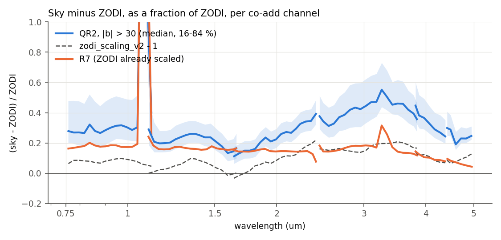
What is left after the shipped zodiacal model is subtracted, as a fraction of that model, per channel (all-sky QR2 frames, |b| > 30). The spike at 1.083 µm is He I airglow.
Zodiacal light comes modelled
Every L2B frame carries a ZODI plane (Kelsall et al. 1998 model, Tsumura et al. 2013 scaling). It is not subtracted from the image: that is left to the user.
The model is not the whole sky
At |b| > 30, sky − ZODI is still 20–40% of ZODI: 60–300 µJy on a point-source flux, as bright as a faint target. Plus He I airglow at 1.083 µm, and bright-star halos.
So we subtract it before the fit
Tractor is given a sky fixed at zero. The only free parameter is the source's flux, at the fixed Euclid position with the frame's PSF.
Every SPHEREx L2B frame has IMAGE, VARIANCE, FLAGS, ZODI and PSF extensions plus a wavelength WCS. The ZODI plane is the zodiacal-light model (Kelsall 1998 + Tsumura 2013 scaling); the mission paper (arXiv:2511.15823) says it is not subtracted from IMAGE. SPHEREx's own Level-3 plan is a zodi spectral fit then photutils Background2D; we do not use L3.
Residual after ZODI (spherex-allsky results/zodi75/README.md, figure zodi75/levels.png): sky − ZODI is 0.032-0.096 MJy/sr, 21-40% of ZODI at |b| > 30, i.e. roughly 60-300 µJy on a PSF flux. So a background step is not optional.
Design shared by every pipeline here: the background is subtracted from the stamp BEFORE the Tractor fit (ConstantSky(0) and frozen image parameters, euclid-spherex src/spectra/extract_spectra.py:279), and the fit solves only for the flux at the fixed Euclid position. A free sky per stamp was rejected in the all-sky work: without neighbours modelled it biases single-source fluxes 6-9% low (tractorjax audit, 2026-10-04).
Backup · sky background
The September Euclid catalogue: ZODI model, then a ring median
1. Cut a 33 × 33 px stamp (6.15″ pixels) round the Euclid position.
2. sky = IMAGE − ZODI.
3. Take the ring 4–6 px out (25–37″). Drop pixels with a defect bit or the MP_SOURCE flag (on a known source).
4. Background = median of the ring if ≥ 4 pixels survive, otherwise zero .
5. Fit the PSF flux to sky − background, weights 1/variance.
The frozen UNIONS choice, used by the September Euclid catalogue and the first all-sky run. v2 replaced it with the per-frame map.
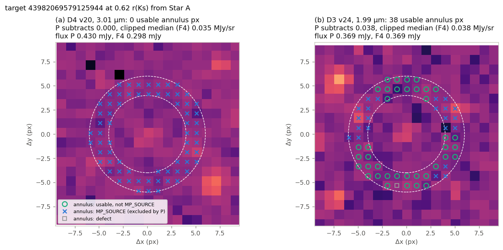
Two real stamps, same method (all-sky run). Right: an ordinary ring, 38 usable pixels (green circles). Left: 0.6 halo radii from a bright star, every ring pixel is flagged MP_SOURCE (crosses): nothing is subtracted, and the flux reads 0.430 mJy instead of 0.298.
Code: euclid-spherex src/spectra/extract_spectra.py lines 228-238 (read for this slide): sky = img − zodi; annulus = r_in ≤ r ≤ r_out, usable (finite, no defect bit) and not MP_SOURCE (FLAGS bit 21); bg = median(sky[ann]) if n_ann ≥ 4 else 0.0; data = sky − bg; Tractor Image with ConstantSky(0). Defaults --win 16 (33 px stamp), --r-in 4, --r-out 6, --r-ap 3. Defect bits 0,1,2,4,5,6,7,9,10,11,14,15,17,19 (19 = OUTLIER is masked here). Weights plain 1/VARIANCE.
Why this choice for Euclid: astra.yaml decision background_subtraction, default zodi_model_plus_annulus, rationale "the frozen UNIONS choice, validated against IRSA". The alternatives listed there (ZODI only, local only) were not run on Euclid. The per-observation background (bkg_annulus) and ZODI (zodi_median) are recorded, which is what the next-but-one slide tests.
The figure is from the all-sky run (spherex-allsky results/figures/fig_halo_stamp.png), which used exactly this method in allsky_v1. Left: target at 0.62 r(Ks) from a bright star, D4, 3.01 µm, zero usable ring pixels; the method subtracts 0 and the flux is 0.430 mJy; a clipped-median fallback over the same ring with MP_SOURCE pixels kept (F4) subtracts 0.035 MJy/sr and gives 0.298 mJy. Right: D3 1.99 µm, 38 usable pixels, both give 0.369 mJy.
Backup · sky background
Where the ring fails: inside a bright star's halo
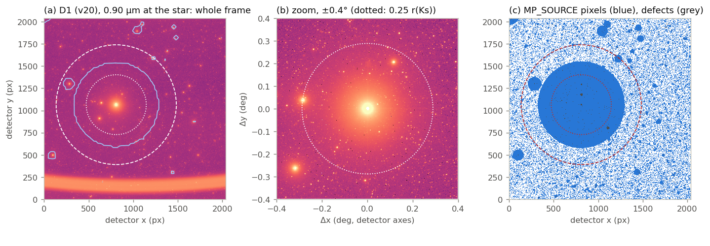
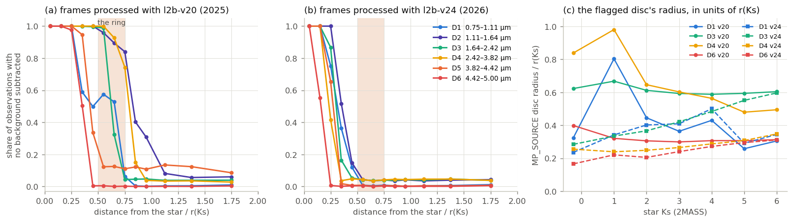
The flag swallows the ring
The pipeline flags a whole disc round a bright star as MP_SOURCE (blue, top right). Inside it the ring has no usable pixels.
So nothing is subtracted
Below: the share of observations left with no background, against distance in halo radii r(Ks). Near 100% inside half a radius.
The star's light becomes the galaxy's
Within r(Ks): 22.8% outliers. With a fallback that keeps the flagged pixels: 3.8% .
Top: spherex-allsky results/figures/fig_halo_frames.png, first row only: a D1 frame (v20, 0.90 µm at the star), sky − ZODI on a symmetric log stretch; the zoom, ±0.4°; the MP_SOURCE map (blue) with the large disc. The bright band at the bottom of the first panel is the He I airglow row, the subject of the He I slide.
Bottom: fig_halo_fallback.png. (a, b) Share of observations whose annulus was empty, so nothing was subtracted, against distance from the star in units of r(Ks) = 0.1° × 10^(0.2(5.5 − Ks)), capped at 3°, for the 2025 (v20) and 2026 (v24) processing. (c) The flagged disc's radius in units of r(Ks) against Ks.
Numbers (results/halomech/halo_stars_score.json, all-sky, 3 stars, 22,425 targets): inside r(Ks) the outlier fraction η0.15 fell from 22.8% to 3.8% with the F4 fallback (clipped median over the same ring with the flagged pixels kept); failed fits 11.7% → 5.8%; far from the stars unchanged (3.0% → 3.2%). The excess of galaxies fitted into the 0.6-0.7 shell near the stars fell from 16.8× the field to 1.4×.
For the Euclid catalogue (same method): the galaxy sample drops objects within 45″ of Gaia G < 13 stars. For comparison r(Ks) is 0.1° = 6′ at Ks = 5.5 and the flagged disc reaches ~0.3-0.8 r(Ks), so the 45″ veto covers only the cores of the brightest stars. The rings round bright stars in the high-z Euclid movie (backups) are this effect. Not re-measured on Euclid.
Backup · sky background
In the September Euclid catalogue the leftover background was visible
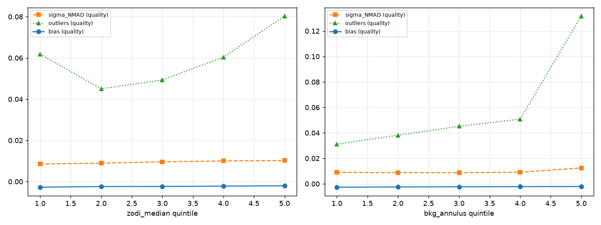
ring background quintile (MJy/sr) σ NMAD galaxyσ NMAD quality0.030–0.037 0.0109 0.0090 0.037–0.039 0.0102 0.0088 0.039–0.041 0.0102 0.0088 0.041–0.044 0.0106 0.0091 0.044–0.289 0.0150 0.0125
Recorded per observation
What the ring subtracted (bkg_annulus) and what the model said (zodi_median), so the catalogue can be tested against both.
Redshifts
Flat across four quintiles; worse by 40% in the top fifth, where the ring sees the most unmodelled light.
Clustering
The worst survey-property template: residual S1D = 81 after the weights (0.4–0.5 shell). Not regressed yet.
Euclid report final_2026-09-28 §9.6 (Figure 27 and its table, read for this slide), truth-matched objects, about 23,100 per quintile. zodi_median: median of the ZODI model within 6 px of the target. bkg_annulus: what the ring actually subtracted after ZODI; its map averages 0.042 ± 0.0045 MJy/sr over the mask. A high value means diffuse light the model does not describe: model error, scattered light, the glow of faint sources and the outskirts of extended galaxies near the target.
Quintile table (σ all / σ quality / quality kept): 0.0302-0.0372: 0.0109 / 0.0090 / 81.7%; 0.0372-0.0392: 0.0102 / 0.0088 / 85.5%; 0.0392-0.0411: 0.0102 / 0.0088 / 85.9%; 0.0411-0.0439: 0.0106 / 0.0091 / 85.2%; 0.0439-0.289: 0.0150 / 0.0125 / 84.4%. The report reads this as "flat to within what magnitude alone explains"; the top quintile is the exception worth showing. Across zodi_median the scatter rises 0.0096 → 0.0122 (galaxy), which follows ecliptic latitude, i.e. SPHEREx depth.
Clustering (report §9.9-9.10): bkg_annulus is the worst diagnostic template, S1D 95.5 unweighted and 81.3 after the ISD weights in the 0.40-0.50 shell; n_obs 39, zodi 18. They are tested but not regressed in fiducial_plus_euclid_depth; the plus_ir universe would regress them.
Backup · sky background
tractorjax-spherex, and what we took from it
INPUTS
IRSA cutouts
per field, via
spherex-retrieval
(not whole frames)
source list
every Legacy source
z < 21 + the targets,
Legacy shapes ⊗ PSF
PSF
zone kernels blended
at the tile centre;
R7 ePSF option
PER CUTOUT: BACKGROUND
− ZODI
the shipped
zodiacal model
− B(λ)
median sky vs pixel
wavelength,
48 bins per cutout
− local map
Background2D, box 10,
filter 3; photutils'
default exclusion
tiles
15 px + 3 px halo
over the cutout
free sky per tile
a constant fitted
with the fluxes
FIT AND PRODUCTS
joint fit
all sources in a tile
together; JAX on
GPU or CPU
one flux per source
per visit; λ, Δλ;
χ² flag (> 10× the
median)
bin to channels
inverse-variance mean,
no clip (102 in
the paper)
photo-z
eazy-py
(paper, on simulated
images)
WHAT WE DID WITH IT
Taken, then changed: one map per whole frame with 288 wavelength bins (follows He I) · halo-aware mask near Ks < 8 stars · 50% exclusion
Rejected: the free sky per tile; without neighbours in the fit it biases single-source fluxes 6–9% low
Not adopted (yet): joint neighbour fitting (better in crowds, kept single-source for speed); R7 ePSF (our extractor reads QR2)
Their own products, shown for completeness: we keep our stamp fit, 77-channel co-add and eazy configuration
tractorjax-spherex (Bahk et al. 2026, arXiv:2606.19875; code hbahk/tractorjax-spherex 0.3.3 at 9266a19 with spherex-retrieval 0.4.0). The stages are from their code as read in our audit (spherex-allsky results/tractorjax/README.md, issue #65; results/bkgmap/README.md, #64; docs/SPHEREX_ONLINE_2026-10-02.md). The paper itself validates on simulated images (SPHEREx Sky Simulator, 21 × 21 px cutouts, a pre-launch PSF, zodi-only background) and does not describe the background map, the tiles, the free sky or JAX: those come from the code. The clones are on nibi, not on this laptop.
Inputs: IRSA cutouts per field via spherex-retrieval, not whole frames (code defaults attach the R7 ePSF and the R7 l3 gain; their paper configuration uses the QR2 PSF cube, gain off). Source list: every Legacy source with m_z < 21 plus the targets, with fixed Legacy Sérsic shapes convolved with the PSF.
Background per cutout: ZODI + a PCHIP profile through 48 quantile bins of per-pixel wavelength (≥ 20 px per bin) + photutils Background2D, box 10, filter 3, otherwise defaults (exclude_percentile 10); mask = their mask bits (including OUTLIER) | MP_SOURCE | bad variance.
Fit: 15 px tiles with a 3 px halo, all sources in a tile fitted jointly with a free sky constant per tile; PSF zone kernels blended bilinearly at the tile centre; 1/variance weights; tractor-jax (JAX, GPU or CPU) with their eigfloor solver, or a CPU linear-solver backend. Output: a flux and error per source per visit, λ/Δλ, a χ² quality flag (> 10× the source median). Spectral product: inverse-variance binning onto channels, flagged visits dropped, no clip; the paper averages onto 102 channels and runs eazy-py.
What we did (DECISIONS 2026-10-04 and 2026-10-07; results/tractorjax, results/bkgmap): TAKEN, their background map. Swapped alone into our fit on 1,038 DESI galaxies it gave Δσ_NMAD −1.70 × 10⁻³ and Δη −0.96%. CHANGED: 288 wavelength bins over whole frames instead of 48 per cutout (with 48 bins over a whole frame the He I edge leaked, which carried 85% of the gap; the fixed port recovers 81% of their gain); the halo-aware mask inside Ks < 8 2MASS discs; exclude_percentile 50 (at 30-55% flagged pixels the default kept only 2-24% of boxes, causing the detector-edge residual, #80); wavelengths from the frame's own WCS; no R7 gain; our defect mask. REJECTED: the free sky constant per tile, which without neighbours modelled biases single-source fluxes 6-9% low (−0.84σ). NOT ADOPTED: joint neighbour fitting (fixes crowded fluxes and gave Δσ −2.37 × 10⁻³ in the audit, but kept single-source for speed, EXT-62/EXT-16); the R7 ePSF (our extractor cannot read R7 frames, #24); OUTLIER masking (+3.0% outliers); their PSF core shift (+0.9-1.7% flux, #62).
Backup · sky background
All-sky final run: one background map per frame
IMAGE
the calibrated
L2B frame
− ZODI
the shipped
zodiacal model
− B(λ)
median sky vs pixel
wavelength, 288 bins
sources masked
− local map
10 px boxes, 3σ clip,
halo-aware mask
= sky to fit
point-source flux
at fixed position
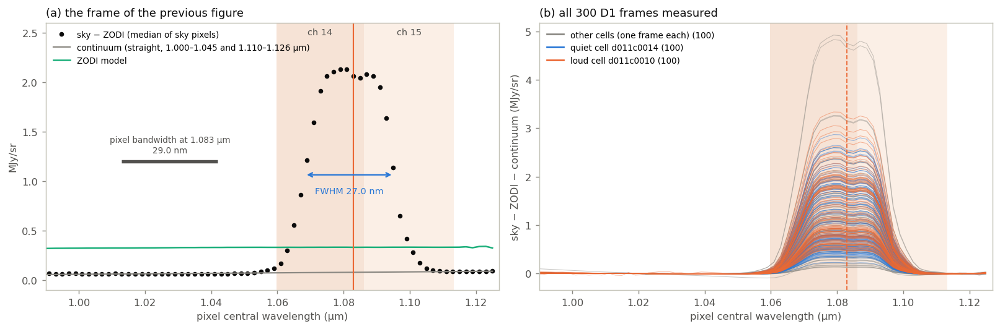
Why a wavelength layer
On the filter, wavelength is a curve across the detector, and the sky has spectral lines. He I is 27 nm wide; at 48 bins per frame (the published default) each bin is 8 nm and the line's edge leaks. 288 bins follow it.
Why halo-aware
Inside the disc of a Ks < 8 star the MP_SOURCE flag is ignored for the local map, so the map sees the halo and removes it. The star's core and compact sources stay masked.
This is "tjhec": the tractorjax-spherex background (Bahk et al. 2026, arXiv:2606.19875) with two changes of ours. Code: spherex-allsky src/spectra/extract_spectra.py, tjmap_background (line 367) and frame_background; the profile sets bkg_model="tjhec" (src/run_profiles.py). Built once per frame and subtracted pixel by pixel; no ring term enters the flux.
Layers: (1) ZODI. (2) B(CWAVE): the median of IMAGE − ZODI in quantile bins of per-pixel central wavelength (from the frame's own wavelength WCS on an 8 px grid), 288 bins per frame, at least 20 px per bin, interpolated with PCHIP; all MP_SOURCE pixels masked for this layer. (3) photutils Background2D on what remains: box 10 px, filter 3, 3σ clip, SExtractor estimator, exclude_percentile 50 (photutils default 10).
Halo-aware mask: inside the bright-star veto disc (radius 0.1° × 10^(0.2(5.5 − Ks)), capped at 3°) of 2MASS stars with Ks < 8 (1,341,326 stars), MP_SOURCE pixels are un-masked for the Background2D step; still masked: the star core (inside 0.1 of the radius), MP_SOURCE components smaller than 1,500 px, and pixels within 2 px of a >3σ excess over a 15×15 local mean. Ks < 8 rather than 6 because the deep flagged discs outside the Ks < 6 vetoes are mostly Ks 6-8 stars (DECISIONS 2026-10-07).
He I: in a whole D1 frame 48 bins are 0.008 µm wide while the 1.083 µm edge rises 20× in about 0.015 µm; that left ±0.04-0.17 MJy/sr, and the 6.5% of observations affected carried 85% of the redshift gap. 288 bins recovered 81% of the gain (results/bkgmap/port_diag.json, disc288_score.json). Figure: results/figures/fig_hei_profile.png (FWHM 27.0 nm against a pixel bandwidth of 29 nm; right panel, 300 D1 frames). The fit also masks co-add channels 14-15 (ZP-42).
Large SGA galaxies are the exception: their extended-model fit (Msky) uses IMAGE − ZODI with its own free flat sky, because the 10 px boxes are about the size of a large galaxy and would remove its outskirts.
Backup · sky background
Choosing the background on DESI redshifts
background what it is cell 1 cell 2 cell 3 F4 ring median; clipped median with flagged pixels inside halos 0.0145 0.0155 0.0114 F4c F4 + 3σ-clipped fit weights 0.0140 0.0153 0.0105 tjhec per-frame map (previous slide), clipped weights 0.0126 0.0138 0.0098
σNMAD of all fitted DESI galaxies, three all-sky cells re-measured on identical pixels. tjhec is also the best inside halos in every cell.
What it costs
~3 s per frame, about 5% of the extraction.
What it does not fix
Blank sky reads +3 to +8 µJy per observation (F4c +1 to +3). Deep inside halos, +19 to +38 µJy. The blue wing of He I on D2 is not followed. Frames that are entirely flagged (1.7%) get no wavelength layer.
About 10% lower scatter than the ring in all three cells
The ring flux (F4c) is still stored for every observation, so the choice can be revisited without re-extracting
It failed part of its own pre-registered test; adopted anyway on the DESI scatter
DECISIONS.md 2026-10-07, "Background: tjhec everywhere (EXT-20 refined), F4c stored only if free (EXT-67)", read for this slide. Cells d009 / d011 / d008, all fitted DESI galaxies, evidence in results/bkgstudy/ (issues #64, #80).
F4 is the ring median with a fallback: when fewer than 4 clean ring pixels survive, a 3σ MAD-clipped median (3 iterations) over the same 4-6 px ring with MP_SOURCE pixels kept. F4c adds the clip3 weights (EXT-64): variance minus g·clip(d, ±3σ). tjhec is the map of the previous slide, also with clip3.
Known limits, from the decision: (1) failed its own pre-registered test: halo-bin flux +9.8 µJy over F4 (about +6 of it clip3's own offset), D5 red edge −2.3 (every arm), one large miss on d009; (2) blank-sky zero point +2.9 to +7.6 µJy per observation D1-D6, against F4c +1.3 to +3.1; (3) deep inside halos blank positions still read +19 to +38 µJy; (4) deep discs outside every Ks < 6 veto read +113 to +185 µJy in every map arm (hence Ks < 8 the same day); (5) D2 He I blue-edge wing not followed; (6) outside halos on d008 the edge fix is slightly worse than the stock map (0.0102 vs 0.0100), unexplained.
Overturned by: a held-out or pilot cell where tjhec is worse than F4c on DESI by more than 0.0005.
All-source frames (EXT-80, DECISIONS): ~1.7% of footprint frames are almost entirely MP_SOURCE (inside the brightest IR stars' discs); there the wavelength profile is missing and He I stays in (D1 −57 µJy in Orion). Kept and measured; tjhec, F4c or a veto is chosen per frame at the release co-add.
Backup · sky background
Background subtraction, step by step
PER FRAME, ONCE
Near a bright star (2MASS Ks < 8), inside its disc r(Ks):
flagged pixels are kept, so the map removes the halo; the core stays masked
L2B frame
IMAGE, ZODI, FLAGS,
VARIANCE,
wavelength per pixel
sky = IMAGE − ZODI
remove the shipped
zodiacal-light model
− B(λ)
median sky vs pixel
wavelength, 288 bins;
sources masked
− local map
Background2D: 10 px
boxes, 3σ clip;
halo-aware mask
= background map
for the whole frame
(~3 s per frame)
PER TARGET, IN EACH FRAME
stamp
33 × 33 px round the
target position
data = IMAGE − map
nothing left for a
sky term to absorb
Tractor fit
PSF flux at fixed
position, clipped weights
co-add
every observation into
77 channels (R = 40)
redshift fit (eazy)
He I channels 14–15
masked
ring 4–6 px
median of clean pixels;
clipped fallback (F4)
stored beside
bkg_annulus, F4c flux:
diagnostic only
large galaxies (SGA)
Msky: IMAGE − ZODI
with its own flat sky
stored, not yet
in the redshifts
THE SEPTEMBER EUCLID CATALOGUE: PER STAMP, NO BRIGHT-STAR TREATMENT (v2, THIS TALK, USES THE MAP ABOVE)
stamp, 33 × 33 px
at the Euclid position
sky = IMAGE − ZODI
shipped model
− ring median, 4–6 px
zero if < 4 clean pixels
Tractor fit
PSF flux, weights 1/var
co-add 77 channels
→ redshift fit
Top two rows: the all-sky final run (final_v2, profile "final", background "tjhec"). Bottom lane: the September Euclid DR1 × SPHEREx catalogue. The v2 catalogue in this talk uses the top two rows unchanged (euclid-spherex src/run_profiles.py, profile "euclid": bkg_model tjhec, bright_kmax 8, fit_weights clip3, mask_outlier False, psf_zone_onebased True).
Per frame, once (spherex-allsky src/spectra/extract_spectra.py, frame_background → tjmap_background): read the L2B frame's IMAGE, ZODI, FLAGS, VARIANCE and wavelength WCS; subtract the shipped zodiacal model; subtract B(λ), the median of IMAGE − ZODI in 288 quantile bins of per-pixel wavelength (≥ 20 px per bin, PCHIP interpolation, every MP_SOURCE and defect pixel masked); then photutils Background2D on the remainder (box 10 px, filter 3, 3σ clip, SExtractor estimator, exclude_percentile 50) with the halo-aware mask: inside the veto disc r(Ks) = 0.1° × 10^(0.2(5.5 − Ks)), capped at 3°, of each 2MASS Ks < 8 star, MP_SOURCE pixels are un-masked so the map follows the halo; the star core, compact sources and >3σ bumps stay masked. The sum is one background map per frame, about 3 s per frame, ~5% of extraction.
Per target in each frame: a 33 × 33 px stamp; data = IMAGE − map pixel by pixel; Tractor solves only for the PSF flux at the fixed optical position (sky fixed at zero), with clip3 weights (variance minus g·clip(d, ±3σ)). Co-add: every observation of the target into 77 channels at R = 40, the same grid as the Euclid catalogue (spherex-allsky src/spectra/coadd_stream.py channel_grid). Redshift fit: eazy-py, with co-add channels 14-15 (He I) masked.
Dashed, side branches: the 4-6 px ring median (clean pixels; if fewer than 4, a 3σ clipped median over the same ring with flagged pixels kept, "F4") is still computed per observation and stored as bkg_annulus, with the F4c flux from a direct weighted solve; it is a diagnostic and a fallback the release co-add can choose, not the flux. SGA large galaxies also get an extended-model fit (Msky) on IMAGE − ZODI with its own free flat sky, because the 10 px boxes are about the size of a large galaxy; stored, nothing fits redshifts from it yet. Frames that are almost entirely flagged (~1.7%) have no B(λ); the choice there is made at the release co-add.
Bright stars, all-sky final run: the red box is the one place the processing differs near a star. Inside the veto disc of a 2MASS Ks < 8 star (1,341,326 stars), pixels the L2B pipeline flagged as MP_SOURCE are un-masked for the Background2D step, so the local map follows the halo and subtracts it; the star core (inside 0.1 of the radius), MP_SOURCE components smaller than 1,500 px and pixels near >3σ bumps stay masked. Outside the discs all flagged pixels are masked. The wavelength profile B(λ) masks all flagged pixels everywhere. Separately, the release carries a bright-star veto flag (bs_ratio) for selecting samples; the fiducial clustering footprint does not apply it (robustness arm only).
Euclid lane (euclid-spherex src/spectra/extract_spectra.py:228-238): no frame-level map. Nothing is different near a bright star: inside its flagged disc the ring has no clean pixels, so nothing is subtracted and the halo light enters the flux. The only bright-star step is at sample level: the galaxy sample drops objects within 45″ of Gaia G < 13 stars. Per stamp: IMAGE − ZODI, minus the median of the 4-6 px ring's clean, unflagged pixels, or zero if fewer than 4 survive; Tractor PSF flux at the fixed Euclid position with 1/variance weights; co-add onto 77 channels; joint redshift fit with the Euclid and ground bands.
Backup · sky background
The final choice, for each catalogue
Euclid DR1 × SPHEREx v2 (this talk)
The same per-frame map (tjhec) and clipped weights as the all-sky runFluxes corrected to total for galaxy size
Bright stars: halo-aware map, and the galaxy sample drops 45″ round Gaia G < 13
Why: re-extracted all 13.8 M targets with the all-sky profile
September (ring median, joint fit): 0.0111 / 4.8%; v2: 0.0088 / 2.5%
All-sky, final run
Per-frame map (tjhec) : ZODI, then sky vs wavelength in 288 bins, then a local map with a halo-aware mask (2MASS Ks < 8)Ring background + clipped weights (F4c) stored beside it
Large galaxies (SGA): their own free flat sky
He I channels also masked in the redshift fit
Why: lowest DESI scatter in every test cell, best inside halos, follows He I
Flagged-out frames: chosen at the release co-add
Euclid DR1 × SPHEREx v2, the catalogue every number in the main talk comes from: the all-sky final profile re-run on the 13.8 M Euclid targets (campaign pilot_r40_97d231b0, background_subtraction = tjhec_halo_aware; euclid-spherex src/run_profiles.py, profile "euclid"; docs/V2_RUN.md), plus the Sérsic-total size correction. Bright stars: the halo-aware map, and the 45″ Gaia G < 13 veto in the galaxy-sample definition. The September catalogue (universe baseline) used ZODI + annulus median, fallback zero (extract_spectra.py:228-238; report final_2026-09-28 §3.2), the same as allsky_v1. The galaxy-sample comparison on the left (0.0111 / 4.8% → 0.0088 / 2.5%) mixes every v2 change: background, weights, uncapped co-add, size correction, error model and the SPHEREx-only fit; it is not the background alone.
All-sky final_v2 (DECISIONS 2026-10-07, EXT-20 refined): tjhec everywhere with no hand-over; clip3 weights; halo-aware mask to Ks < 8; F4c flux stored per observation (EXT-67, a direct solve identical to a full fit); Msky with its own flat sky for SGA galaxies (EXT-15); He I channels 14-15 masked in the fit (ZP-42); all-source frames decided per frame at the release co-add (EXT-80). The co-adds in the preliminary catalogue use tjhec on every frame and are provisional.
Note: the main-talk slide "Bright stars pull redshifts into rings" describes F4 as "a clipped median over all usable pixels"; in the code it is a clipped median over the same 4-6 px ring with the flagged pixels kept, and it is no longer the final background.
Overview
13.8 M Euclid DR1 sources with SPHEREx spectra and SPHEREx-only redshifts Galaxy sample: 6.2 M, σNMAD 0.009, 2.5% outliers
Quality sample: 3.4 M, σNMAD 0.008, 0.6% outliers
3–9× tighter than PHZ brighter than IE = 19.5, still 1.7× at 20–20.5
Should be useful for a z<0.5 galaxy-galaxy lensing sample. Will be helpful for cluster studies at redshifts z<0.5
Numbers: v2 SPHEREx only (numbers/numbers_v2_spherex_only.json). Galaxy sample 6,191,949 at 0.0088 / 2.5% on 112,795 truth matches; quality 3,412,115 at 0.0076 / 0.6% on 93,552; PHZ on the galaxy sample's matches 0.0358 / 2.5%; ratio PHZ/ours 9.2 at I_E 16-17, 4.9 at 18-18.5, 2.9 at 19-19.5, 1.7 at 20-20.5.
Deliverables: the catalogue (Euclid-internal first, public later) and a self-contained data release report.
Next items with detail:
- Combine the two estimators: PHZ's error is nearly flat in magnitude, ours steep; ideal partners. Agreement alone keeps 96% of the galaxy sample's matches at 0.0085 / 0.36%.
- Set is_star on objects whose galaxy fit fails (5.75 M carry no flag), and refit the error model with a magnitude term (68% coverage 0.88 bright, 0.55 faint).
- Full 13.8 M fit with fsps_qsf_12_agn_wide (~5 h): fixes type I AGN redshifts and ~100k stellar masses overestimated ×4.
- plus_ir universe: regress zodi, bkg_annulus, n_obs.
- Extractor arms: extended-profile source model (bright extended galaxies lose 30-40% to the point-source model), MER-neighbour deblending.
- Refit the P(z) stretch on the finished sample (prefer raw widths now).
- Re-run the IRSA official-pipeline comparison on Euclid targets.
- Shred cut: ~2.7% of the release sample are knots/fragments of large galaxies (image inspection); they cluster with their hosts.

 Galaxies round three bright stars: fitted at z < 0.1 (blue) or 0.5 < z < 0.7 (orange). Left, the annulus background as published; right, the clipped median.
Galaxies round three bright stars: fitted at z < 0.1 (blue) or 0.5 < z < 0.7 (orange). Left, the annulus background as published; right, the clipped median.